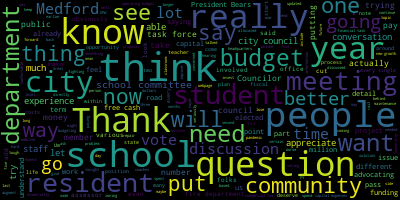
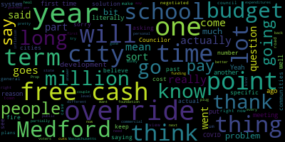
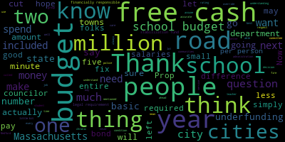

[Hurtubise]: Vice President Collins. Present. Councilor Lozaro. Present. Councilor Lemming. Present. Councilor Scarpelli. Present. Councilor Singh. Present.
[Bears]: President Beyers. Present. 24475 offered by Councilor Scarpelli. be it resolved that the Medford City Council hold a question and answer session to discuss the definitions and terminology regarding the proposed Proposition 2.5 overrides and the proposed debt exclusion measure. To that resolution, the following amendments were added. Councilor Scarpelli asked that the administration and Council on Aging do outreach to seniors about this meeting. Councilor Callahan requested outreach to parents of school-aged children, not just teachers, and specifically requested outreach to the PTOs. Councilor Sang requested general outreach and specifically requested that the community liaisons translate into other languages the information that is on the city website about the overrides and the debt exclusion. To ensure that the council is able to answer questions in a timely manner and that decorum is maintained, the council president, myself, will be enforcing the following rules. One, members of the public will have one minute to ask one question. Members of the public will not be able to ask a second question until all who seek to ask a question have had the chance to ask their first question. The president will verbally request that residents not ask duplicative or largely similar questions to questions that have already been answered. and may move to the next question if a duplicative or similar question is asked. Each counselor will have up to two minutes to answer per question. The president will verbally request the counselors not answer if a duplicative or largely similar answer has been given by another counselor and may move to the next question if a duplicative or similar answer is given. After members of the public have had the chance to ask their first question, the president will open the floor to either a second question or a short public comment by members of the public in attendance. And before we start, I just want to say, that the council itself is in mourning today. Last night, we lost our city messenger, Larry Lepore, who has served us for many years. We will be having some condolence remarks made at our regular meeting that will begin after our committee of the whole meeting. So I hope that folks will stick around if you knew Larry or otherwise to say a kind word or story that you may have shared with him during his many years serving the city behind this rail. With that, I do want to invite our city assessor, Ted Costigan. The council had requested some answers and updates from him, and I know that he's here to share some information that his office has been working on. So with that, I will go to our assessor, Ted Costigan.
[Scarpelli]: Before we go on, can I just address my original question? resolution.
[Bears]: Sure. And then we'll go ahead.
[Scarpelli]: Pete, there are questions, um, that I know that, um, there were some questions about council rules, about limitations when it comes to, to, uh, meetings minutes and how long we could speak. And if there are follow up questions, and if there's one question, I believe council bears explain the process that we're using. And, uh, as council president, I think he wants to move this meeting along, but I just, there were some senior citizens that mentioned, if there's some confusion, I hope we have a little leeway when it comes to maybe asking the same question twice because of maybe not understanding it. So I hope we would do that. The other question that Councilor Behrs did read, did speak about is that we all asked for information to be sent out to the community. The mayor's response, I believe, The chief of staff did respond that legally the city couldn't inform or given, I'll just read if I can just so people understand, cause it's a little confusing to people. Sending this information request, so it's, we sent this email to legal on today to guide us on what we can do, should avoid doing before we can assist given the OCPF guidelines. One specific question in mind is whether we can intentionally direct notification advertisement to subset of residents. So the following is up on my email below, per council, we can't send unsolicited information to all voters or a portion of voters of the city, whether by mail or by email. We got that, that response was today, correct, Council Beers? It was 10 a.m. today. If we knew that and we needed to change wording, I think sending out an all call that we were having a meeting that would, it's open to the public, that just read the resolution, I think that that wouldn't have been an issue. So I just wanted to share that with you. So thank you.
[Bears]: Sure. And per council, you mean legal council? I don't know that I was on that email.
[Scarpelli]: Oh, you are.
[Bears]: Was I on that? I believe it was.
[Scarpelli]: Council Adam, did you forward this to everybody?
[Hurtubise]: You know what? I don't think I did. I apologize. I don't think I did forward that to everybody. I thought it was, I thought it went to everybody. I think it only went to the, to the three who had amendments. I don't think I did for that area.
[Bears]: Okay. Thank you. She means legal counsel, right? Yeah. All right. Good. I didn't want her to think about this council. All right. Thank you. Um, with that, I'll go to our city assessor and let me know when you want me to put slides up. The new mics are coming on Thursday. Shane's going to come out. He's going to fix it. I hear the chair moving. Thanks, Shane.
[Costigan]: testing.
[Bears]: There we go. Thank you, shane.
[Costigan]: pretty big guy, so sorry about that. Yeah, but if we could go to the slides. Just out of a point of information, the Department of Revenue received our valuations for fiscal year 25. They approved it actually this morning, so I'm able to share with you our evaluation changes for fiscal year 25 as a reminder to everyone. On a yearly basis, the Department of Revenue and the state mandates that We the assessing office update valuations to full and fair cash value. Again on that fiscal year basis. We share those valuations in January, but we worked really hard in the office this year to get them done. And as of this morning they were approved so just sharing this information, because it will apply to the override. in those override options. So residential valuations went up approximately 4% this year and the commercial industrial personal property which is our commercial base went up about 3% in value this year. Our new growth which is when you think of like new single family homes new condo conversions, any exempt property that goes to taxable, that's a $2.5 million in new growth, which adds to our levy. And then I just wanted to point out that, you know, absent any override vote, the average tax bill would go up approximately $175 on our median single family this year. That's sort of the effects of Prop 2 1⁄2. Next page, so we obviously have our override votes just as a reminder to people, questions, just as a note, question six, whether it passes or not will not have an effect on fiscal year 25 tax bills. That's because the debt service payment would have to be paid in fiscal year 25, which would not be possible given the time it takes to issue the debt and obviously the six month period before the first debt payment would be due. so we're looking at questions seven and eight tonight which would have an effect were they to pass on the fiscal year 25 tax bills and just next slide I don't want to people to death, so I just took one example, which is our median single family tax bill. I know the numbers might be a little small, but again, the way we arrive at your tax bill is multiplying your valuation by the tax rate. And what, you know, our tax rate is in a lot of ways, determined by how much we can levy on taxpayers. So the levy the last year was about 139.9 million. We have Prop 2.5, which pushed up the levy by 3.5 million. The new growth, which is 2.5, which gives us our fiscal year 25 levy at $146 million. That's the amount of money that the city can collect in real estate, personal property taxation from its residents, taxpayers. Our estimated tax rate, given all this, and we do have a split rate between the commercial and the residential, we'll focus on the residential is $8.37. On the median single-family home, that would mean a tax bill of $6,519 for the year. Again, that's a year-on-year difference from last year of $195. Now, the next two columns contemplate the passage of question seven and eight, respectively. As you can see, the year on year differences, and then I'll just go move on to the last column. If they were both passed, instead of a median single family home in Medford having $195 a year on year increase, the increase would be $529, giving us a net effect if both questions were passed of approximately $334 to the, again, median single family in Medford. I did a, run the calculations for the median condo, which would be a year-on-year change of $345, and the two families would be $873. That's again the median. What I will pledge to do, and I'm working with the mayor's communications office to get this done on our website, now that as of this morning I have the approval from the Department of Revenue, I will publish all our addresses and values of residential properties on our website. with these contemplated tax rates which could change slightly and I'll get that in the next slide so that every resident in Medford that would like to can go on to our website as they can normally you could go right now and find your 24 value but in advance get their fiscal year 25 value and the contemplated tax bill that would be associated with that value. So just go real quick to the next slide. Just a caveat that we, those tax rates are dependent on councils tax rate hearing. They are dependent on the department of revenue, uh, approving our tax rate recap. And there is a rounding issue that comes in because we split the rate. So I can't go all the way past the levy. So occasionally the tax rate will be off by a penny that way. So that's to say, um, We're done with evaluation. We want to be as transparent as possible as people are starting early voting on this issue. So I believe this weekend. So we will commit this week to as long as the mayor's office communications team can help me do it, get all the values and the impact of these overrides on our website. Any questions from the council?
[Bears]: Yeah, sure, and just thanks, Ted, I wanna appreciate your hard work getting this done. In October, it usually gets done in January, so it's appreciated. Councilor Scarbelli.
[Scarpelli]: So I know that the word transparent gets thrown around, Ted, and I hate for you to get dragged into this, but you weren't part of any financial task force for the override, correct? No, I was not. Thank you. Normally, when communities put this into place, I'm told from different communities, different assessors, finance directors, that they usually line this up prior to any budget meetings, so we can help our most vulnerable people in our community understand what any impact it would make. So having this calculation that you're doing for us, and thank you so much for doing it, because I know there were so many questions with the calculations that have been public on the side that you had nothing to do with. I know it came out of a state website, but it didn't truly calculate the newer assessment. So that's correct, right? Yep, right. So when we look at this and now we're doing it on the 11th hour, the question was normally in your experience, other professionals in your field, this is done usually during budget season. So we can prepare our residents that if there was an increase of 373 median price, They're prepared. I know it sounds minimal to some people because it's only, that's all we keep hearing, it's only, but is it odd that we're doing this so late?
[Costigan]: Councilor, I think you described the typical circumstance where the vote, you know, as we know, we look at the votes online are done in April or May.
[Scarpelli]: Okay, thank you. Appreciate that. Any other questions?
[Bears]: Councilor Collins.
[Collins]: Thank you, President Barras. Thank you so much for being with us here tonight and for all the legwork that you've been doing to get the FY 25 estimated valuations online months earlier than you otherwise would. Really appreciate that. And I appreciate that it helps folks get a clearer picture of what precisely their bills might look like in the future based on various how the votes go in various directions. So just to make sure that I understand the information that's available, and it would be, is it on the Assessor's Department page or the Finance Department page on the city website?
[Costigan]: Yeah, so I just got the values done today. I just prepared the PowerPoint. I'm working with the, going to have to work with the Mayoral Communications Office to get it onto our assessing page. We will also have anyone who doesn't you know, they can call the assessing office and we can look it up very quickly for them. So they want to call in, or if they want to access our website, either way.
[Collins]: Great. So up until today, people can call your office or look on the assessor's department website webpage and find the webpage is going to be dependent on like, I'm going to try to get it up this week, but like, it's just however fast we can do it.
[Costigan]: So probably let's say by Friday. Sure.
[Collins]: But We have the FY 24 based calculations and now you're expediting getting the FY 25 based valuations so that people can have even more clarity. Great. Well, thank you so much for updating that ahead of schedule. Appreciate it.
[Bears]: Thanks Ted. Just two more questions. One, given your estimates, if neither of the overrides pass based on your estimates, the tax rate would once again be going down.
[Costigan]: That's correct.
[Bears]: Okay. And before today, when you had the approved fiscal 25 values, would it have been possible for anyone to provide an update using anything other than the fiscal 24 values or an estimate? Anyone from the public, not from your office.
[Costigan]: I mean, you know, it's possible they might have gotten close, but it's kind of hard to, you know, drill down and get it accurately presented. So, yeah, I would say no.
[Bears]: Thank you. All right. Any further questions from members of council? Councilor Say.
[Tseng]: Thank you. I understand, you know, one of the council's main priorities going in before Knowing that this might be an option in the coming years was to maximize this senior circuit breaker for the tax deferrals and to push for the senior work-off program to get more of that done. It's my understanding that folks can find out more about the senior tax deferral from the assessor's office, is that correct?
[Costigan]: Yes, so there's, as you mentioned, our senior work-off program is staffed, I believe over at least 20 senior work-off participants this year across the city. The senior deferral applications are available as well as the personal exemptions for low-income seniors. So it's kind of two different programs. They have both asset and income limits.
[Bears]: Councilor Scarpelli.
[Scarpelli]: Thank you. With just a couple more questions, I know that you mentioned that this doesn't have any impact on question six, correct? It's not in fiscal year 25. Because it's not enough time to put everything in, correct? We don't know the actual numbers, correct?
[Costigan]: Yeah, I haven't calculated that. Obviously, interest rates could change drastically.
[Scarpelli]: Okay, but we still don't know how much for question six. It's an open-ended, as it said in the question, there's nothing there.
[Costigan]: It's I, you know, I can't really tell you what the market's going to do right on the on the bond market.
[Scarpelli]: All right. And I realize the exemptions are great. but I know that there are options when you do this ahead of time is to really prepare your seniors. I know the exemptions sound good, but when you read them and you talk to actual people, there are a lot of senior citizens that really don't fit in that category. So there are no other options. So I know the buzzwords easy to say, we do have exemptions, but when you put it apples to apples and you sit with the senior citizen and you go through their situation, I'm sure you know, Mrs. Jones bought her house with her husband 55 years ago for 50,000. Now the house is appraised at a million dollars. You know, it really doesn't help what we're offering. So it's a funny number and there could be something done more if we had time for an exemption. That's all I'm saying. I know that if we had time, this is something we could petition to see if we can really truly support our senior citizens. I think that must be said. And I think the, the last piece to this, I think that when they look at this and because one question I have Ted is that a lot of people have asked, not just seniors, um, that the, this is like a one time tax. This isn't. So when you see that 4% above your two and a half percent increase, that's going to be compounded year after year after year. This isn't something that's going to go away like debt exclusion, correct?
[Costigan]: Correct, the levy is set at the new limit and the two and a half is on that new levy.
[Scarpelli]: Right, so that'll grow forever. And I think the other piece that people have to understand too, and it's a tough office. So I just, when you hear the misconceptions, I just need your input to educate our residents and understanding that, again, I believe the mayor said her house is only $13. Some others here said their house is $40 a month or whatever, and we can handle that. That might be the first year, but again, we were told, I think someone from your office emailed us and said that we'll be reassessing again in 2025 for 2026 using the data for 2023, correct?
[Costigan]: Um, so the 25 values used calendar year, 23 sales. That's correct. So next year we're going to see a 26 using calendar year, 24, uh, sales.
[Bears]: So we're going to say that happens every year.
[Costigan]: That's a every year. Right.
[Scarpelli]: So that's good. So it happened. Thank you for helping with that. So it increases. So Again, when this tax goes in, it's now assessed again, the homes will be assessed again.
[Costigan]: Yeah, so I can't predict what the final 24 numbers are going to be, but it could go up, could go down, depends on the market, right?
[Scarpelli]: Right, but we're seeing that most assessments, because I could tell you, I'm dealing with my own family members that are looking at a $400 increase per month for his new assessment. It's real. So I think that what people also have to understand is that it's not just the home tax. You've seen their cars. Motor vehicle excise. Vehicle excise tax is going to go up. You're going to see the CPA tax because your homes are going to be assessed higher now, right? So now the CPA tax will also be taxed higher. You're going to see that a little bit higher, correct? Okay, that's yeah, that's generally correct.
[Bears]: Generally, the CPA was included in the calculations presented.
[Scarpelli]: Okay, so thank you. So what you're seeing is, it's not just it's not just an override tax. It's an override tax. It's compounded year after year. It's a tax that increases in the CPA as well. It's the excise tax that increases as well. It's so much more than just 13. That's my point I'm trying to say. I know it's easy to look at a site that wasn't put forth by our office because we know that although it's correct, the numbers that my colleagues did put out there on a page, it does give the numbers that are true and factual, but That didn't include the assessments that residents had, and I'll use my brother's example, because his house was appraised at, on the calculations, at $800,000. His house is now appraised at $1.2 million. So that's why we're seeing that. And that's not odd. This is family-owned homes that that we passed on to generation to generation, just like most people in this room. So, but thank you. I know I'm monopolizing the time because I think it's important, because these are the questions the people that are sitting in this in this room right now and their friends have contacted me and said, we're very confused, Mr. Scappelli. Because even something simple as, Mr. Scott Pelley, why are we fighting for $7.5 million for a new high school? And I'm like, no, no, this has nothing to do with the new high school. That's down the line. And people understanding that, well, this is a fight between schools and kids and senior citizens. That's not true at all. We just want to make sure all the information's out so every resident understands the impact. that, and we could talk about solutions as we go, because there are solutions. There were solutions back in April, but thank you.
[Bears]: Thanks, Ted. Really appreciate the hard work of your office. Just want to note, certainly this council, and you've shared some recently, has taken several votes to maximize the exemptions allowed by state law. If you see anything more that we could do on that front, I believe in 2022, we voted to tie it to the law so that we wouldn't have to constantly be updating it as the state did. If you see anything, please let us know. Certainly our intent is to be maximizing everything, and I believe we have.
[Costigan]: Yeah, just the HEROES Act that just was passed allows us to tie the veteran personal exemption to cost of living. So that just passed, so it would be a new action by council.
[Bears]: Awesome. We will do that. Thank you. Okay. Okay. All right. I'm going to read off the rules one more time. We're going to move to question and answer. All right, so we're gonna follow the following rules for this part of the meeting. Members of the public will have one minute to ask one question. Members of the public will not be able to ask a second question until everyone has had a chance to ask their first. I'm gonna verbally request that we not ask duplicative or largely similar questions and may move on to the next question. If a duplicative or similar question is asked, counselors will have up to two minutes per counselor to answer each question. I'm requesting the counselors not provide duplicative or largely similar answers to answers that have been already provided by other counselors and may move on to the next counselor for an answer if that happens. And after members of the public have had the chance to ask their first question, we'll open the floor to a second question or a short public comment. And I'm going to be alternating between the chamber and Zoom. So we will start at the podium. Mr. Castanetti, you'll have one minute to ask a question and then we'll go to Zoom after answers from counselors.
[Castagnetti]: Thank you, Councilor Beers, Andrew Castagnetti, Cushing Street, East Medford, Massachusetts. I'm very devastated that we lost Larry Lepore. He's a wonderful man. He's a good friend.
[Scarpelli]: Is the microphone on? Andrew, is the mic, turn the mic down.
[Castagnetti]: Yeah, there you go. I'm sorry we lost Larry Lepore. The minutes.
[Bears]: You got your minutes.
[Castagnetti]: Thank you. I hope you all had a good Columbus Day yesterday, because he is the greatest world naval explorer in history. He said the world is round, not flat. He had more courage than all of us combined. He is also a hero to me and others. Also hope you had a good Indigenous People's Day. I also hope the same for the Jews. in the Mideast because they've been there more than 2000 years. Now let's talk prop two and a half overwrites. As I told you all before method never had a prop two and a half overwrite. We're not Winchester, we are all method here, a working class town city. Our problem is fiscal management and lack of building maintenance period, full stop. My ask is for you honorable city councils to stop this real estate tax assault on we the homeowners and leave the people alone. Stop the bleeding. We're already having trouble with all this Biden inflation.
[Bears]: Andy, thank you. That's a minute.
[Castagnetti]: Um, does it have one sentence?
[Bears]: Go ahead and say the sentence minutes up.
[Castagnetti]: I mean, it's up. You can say the sentence. Andy is a minute up. Yes, sir. It is up. Yeah. All right. My motto was this no, no further taxation. He's allowing me to speak. Do you want to interrupt me? Do you want to interrupt me?
[Bears]: Let's just hold on here, guys. Like, I can't believe we're doing this on the first question.
[Castagnetti]: This is crazy. Stop it. My motto was this, no more further taxation without proper representation. The end. Andrew said that dark call.
[Bears]: Thank you, Andy. Does anyone have a response? Your time. Anyone want to answer the question? Councilor Lemke, you have two minutes.
[Leming]: I'm going to try to respond to one thing there. I didn't hear a specific question, but you did say that Medford's not like our surrounding towns. No, I said Winchester. Yeah, we're not like Winchester. 90% of cities in the state of Massachusetts have had an override. Medford has one of the lowest operating budgets per capita of any city. midsize city in the state of Massachusetts. And that is in large part because we are one of the 10% of cities that has never had an override. So you're right. We are not like our neighbors that have had overrides and we have less money for it.
[Bears]: Thank you. We'll move on to the next question, unless anyone else has an answer. Thank you, Andy. We'll go to Michelle B on Zoom. Name and address for the record, please. And you'll have one minute to ask your question.
[Barkson]: Hi, my name is Michelle Barkson. I live at 23 Diane Road in Medford. Thank you everyone for your work with this important progress. My question is, can you please speak to the ramifications of what will happen if questions seven and eight do not pass specifically to the school budget and how that will affect our students learning environment. I just want to remind everyone listening that teacher working conditions are student learning conditions, and those two things cannot be separated. As a public school teacher in another town, I can speak to that being very true. So I would love to hear, or I would not love to hear, but I want to hear what might happen if these don't pass so we can highlight the importance of them passing. Thank you.
[Bears]: Thank you. I'll go to Vice President Collins, then
[Collins]: Thank you, President Behrs. Thank you for the question. I want to add a disclaimer that I obviously sitting behind this rail on this date, I'm not a school committee member. I don't have that level of granular knowledge of the school department and the school department makes its own budget. The city council does not. That being said, I have discussed this matter extensively with people in the community, with people involved in the schools, with school committee members. I understand that you know, what we stand to lose if these questions do not pass includes, you know, some of the stuff that people involved in the schools may remember from when we had to cut the school's budget during the pandemic. And that includes eliminating positions, including teachers, nurses, behavioral specialists, literary coaches. We lose the opportunity to add programming within the schools that supplement the curriculum that is state mandated. So, some programming that is really beloved by students and their families, such as arts and musical curricula. We lose the opportunity to augment the student experience with those types of classes. We lose the opportunity to augment the student experience with more people in supportive roles. such as therapists, nurses, people outside of the classroom who are nevertheless there to make sure that students can thrive in our schools and achieve the best learning that they can? Thank you. These two questions combined also limit our ability to offer competitive and living wages to the many, many people who work in our schools and offer students the experience that they really deserve. We know that we need to be offering living wages to our teachers and paras and all school staff because it's the right thing to do. We also know that we need to be able to do that in order to keep these people in our school system so that our students are served in the way that they deserve. This will also have impacts on building maintenance.
[Tseng]: Thank you, Councilor Collins. Sorry, Councilor Sang. Thank you. Councilor Collins, I think, touched on a list of positions that, subject to the school committee talks, might be at stake. Literacy specialists, school nurses, guidance, mental health specialists, increased class sizes. You know, it's not fear-mongering when a lot of this stuff has already happened. happening in our school districts. We've already had to make a lot of these cuts. We've already found it hard to retain our long-term teachers. We also need to take a step back and look at this big picture-wise. We know when we invest in our schools, your investment and your value of your property goes up as well, that your public safety around you, crime goes down and public safety goes up. And so we, I think there are longer, bigger picture benefits to everyone, even if you don't have kids in the schools. Touching on the roads real quick, because that's also a part of question seven. I think we need to look at the opportunity we lose. Now, the basic role of government, of local government is to fix your potholes and to send your kids to school. And if we're not, if we can't do either of those, then we're not, you know, we're not doing our jobs, but we were asking the voters to give us the tools to do our jobs. And something about question seven with the roads and sidewalks is that it would give us a crew that would work full time on fixing our potholes and sidewalks in the city. That's something that we don't have right now because our resources are too constrained. And that's something that I believe if passed, will show, will give our residents a real benefit, a real benefit that you can see and live in our city. Thank you for the question.
[Scarpelli]: Let me start off by first saying that unfortunately this administration has divided this community for the children in the schools and the seniors or the homeowners or renters. And I say shame on this administration, shame on this council, shame on the financial task force, because the bottom line is this. This group knew that we were heading in some tough waters back in June 20th of 2023. And you could see that in a city council budget meeting when council beers met with the mayor behind closed doors to set up some sort of deal. We didn't know what that deal was, but they created a financial task force and that financial task force put together a plan of an override without anybody's knowledge, anybody's input or any, or any community participation. There are no issues with our school department. This is a fair tactic and fair tactic only for the fact that we should remember this. Back in April, back in May, back in June, when the city had $25 million in free cash, it was my responsibility to bring forth that we take that $5 million levy that budget, make sure there were no cuts, understand the process, and then move forward to see if we truly need an override, which I never said that should never be an option. But to hear parents and teachers and friends and family say, George, explain this to me. Councilor Villes knew that this was gonna be a devastating situation, but it could have been solved and still could be solved with free cash. We have plenty of free cash in the system not to turn the city upside down or divide the city. Now, remember, I'll leave you with this. What we're asking for in the budget in this override doesn't mean you'll get exactly what you think you're gonna get. Because all these cuts were made to set up this override as a fair tactic. So please. Thank you, Councilor Scarpelli. Councilor Scarpelli is not against the children. We just hope that people understand that this could be soft.
[Bears]: Thank you, Council President. Thank you, Councilor Scarpelli.
[Scarpelli]: Appreciate it.
[Bears]: Just gonna say a few things really quick. The council, oh, I'll go to, okay, I'll wait. Councilor Zahra, Councilor Lemming. Two minutes.
[Lazzaro]: One thing that I wanna mention about to answer the Zoom question, of residents question, Michelle. One thing that we would lose if this question, question seven in particular, does not pass, it's a very specific, I believe it's question seven, it's a very specific thing about the high school schedule, which right now does not allow some of the students who are taking specific classes, I believe it's in the vocational school, to take certain art classes, theater classes, visual arts. It limits our students in being the fully well-rounded students that we want them to be able to be. When you're in high school, you want to be able to explore figure out who you are, what you're interested in. And we want to give all of our students the best opportunity to be everything that they can be. And we don't want to limit them because we haven't had the opportunity to expand the schedule to really experiment with what that can be. I will also say that in 2019, I worked for the school district and I knew then that we were underfunded. And I started thinking about running for city council to make something like this happen. This has been happening for a long time. We have had underfunded schools for a long time. And this has been in the works for a long time. This has needed to happen for quite a long time. Thank you.
[Bears]: Councilor Lemming, two minutes.
[Leming]: Saying that we can address the budgetary problems of the Medford public school system with free cash is like me saying the government gave me a $1,200 check from COVID. So I don't have to look for a job right now because that check is going to last me another another two weeks. It's the same thing. The government gave us, the government gave the city of Medford some money. It was a one-time thing from COVID and the proposal that we can plug ongoing costs from free cash. All that would do is drain our reserves and we'd be back at square one in five years. If these overrides don't pass straight up, there will be layoffs in the school system and the roads will continue to be in disrepair. Thank you.
[Bears]: Thank you, nope, one time, sorry. It's question eight, yeah. And any other councilors wanna go? I'll be quick, give myself two minutes. I just want to list it out. Two literacy interventionists, two behavior specialists, one nurse, four teachers, and four department heads. Those were cuts that were postponed because we used one-time funds this year to plug the hole. There's another 25 positions, two school counselors, four classroom teachers, two security monitors, One attendance and re-engagement officer, five paraprofessionals, and 12.2 additional staff members that are on one-time federal funds this year. So it's about 35 to 45 staff in the schools. We would not have a permanent dedicated street and sidewalk crew to use the machines that we already own. We don't have enough staff in the DPW to actually run those machines four times a week. And there would not be significant room for looking at additional compensation for educators, paraprofessionals, and staff in our schools, whether that's just to raise their pay, because it's a contract year, or whether that is when we're talking about extending potentially 10 to 15 minutes to school day to align vocational with the comprehensive high school schedule. or just to address any issues on time on learning. So thanks. That's what we would lose. We will go to the podium. Name and address for the record, please. And you have one minute to ask one question.
[McGonigal]: John McGonigal, 20 Ross Street, Medford. Question is the residential Override not override the assessments on each house that are going around now. They're roughly around $60,000 for each house for the last three years So if you take the $60,000 and you multiply it by your nine dollars a thousand You're coming up to five hundred forty dollars a house every single year so Multiply that by your twenty six thousand seven hundred houses that are in Medford which is $13,857,000. My question is, where does that go?
[Bears]: So that's not actually how the tax rates calculated. The assessor just presented the information. The levy changes based on the two and a half and new growth. So it's only about 6 million this year, not 13 million. And generally that amount is only going towards fixed costs. So we have union contracts, increasing health insurance costs, increasing retirement pension costs, increased costs of materials and pavement. So that's generally what the normal two and a half new growth increase goes towards.
[McGonigal]: And with that assessment, one thing you didn't put in as a cost increase to the citizens of Medford is your homeowner's insurance, your homeowner's insurance. If your residential area goes up 160,000 over three years, that's going to be probably another three, $400 a year that I don't think anyone's talked about yet.
[Bears]: Sure.
[McGonigal]: So that was my question.
[Bears]: Thank you. Does anyone else want to answer that question?
[Scarpelli]: I think if I can. I think I heard some similar situations with, I know what the assessor came up and gave us medium price homes, but we're seeing real people have told me that this is what we're seeing. We're seeing the increase close to $60,000, most homes that you're seeing an increase at a higher percentage rate. And again, on top of all of what we talked about, with this, so it's not the $13 a month, the $40 a month. It's the pieces that this gentleman just said is the understanding that I never thought that our home insurance now will now increase. So again, this isn't them against us. This is understanding that we have viable options right now to fix this. with free cash and then work together to see how we can have an open process to really include all the stakeholders to make sure that, uh, that no one is hurt. So thank you.
[Bears]: Any other questions from answers from members of the council? Seeing none, we'll go to the next question on zoom. We'll go to Lizzie Charbonneau. Lizzie, you have one minute to ask one question. Please provide your name and address for the record.
[Charbonneau]: Yes, my name is Lizzy Sharpener. I live at 18 Stickney Road. So my question is, why do we need to do the override now? And in particular, I'm curious to hear you speak to the rising inflation the last few years that has exceeded the rate that the levee limit has been able to increase as well as which costs increase even faster than inflation. My understanding is that insurance and pensions and other fixed costs that the city has to that we pay for are rising faster than inflation and faster than those levy increases. I would also like to hear you speak to the increased costs in schools that are exceeding inflation rates and our inability as a city to provide some basic infrastructure like maintenance of roads due to our low budget. So if you could speak to why we need this override now, especially in relation to those items, I would like to hear that.
[Bears]: Go to Councilor Callahan.
[Callahan]: Thank you. So, I think this is a basic question why do we need these overrides. And as Councilor Lemming stated, we, we actually I will say we rank 320th out of 351 Massachusetts cities and towns. in the amount of budget we have per person. So we have less budget per person than every other city in Massachusetts and we have less budget per person than 90% of towns. All of the others that spend less per person than we do are much smaller than we are. Our budget is too small to provide the services that we need. I want to go ahead, I don't know, this is probably gonna be too small for people to see, but this is a chart of our budget. And this large blue area here is the schools. That is what we are looking for more money for, so we cannot cut that. The next one is insurance. Insurance is something that we are required to have by law. We cannot cut that. The next one is pensions. Those are contractual. We cannot cut pensions. The next two are our fire department and our police department. My feeling is that no one on either side of the Prop 2.5 debate wants to drastically cut our police and fire departments. The next one after police and fire is our roads. And I appreciate your question about the roads, because underfunding of our roads has caused us to have $67 million in essentially road debt it's called the road backlog 30 seconds. Thank you. After that, our bonds, which we are also required to pay, and then we get down to smaller things, the library facilities, many other small departments. None of these, if we even cut the entire department, could possibly fix the $3 million to $5 million that we need for the school budget. Our budget is simply too small. I'll let someone else talk about which of these increases more than inflation. Thank you.
[Bears]: Thank you. Go to Councilor Lemming, two minutes.
[Leming]: So adding on to what Councilor Callahan said, partially this is due to the lingering costs of COVID, which resulted in both decreased funding going to the school system, partially that was just because you have fewer students going into public schools, and partially because there was a lot of activity in the healthcare system from COVID. So there is a sort of a, so the cost of health insurance, which we have to pay ended up rising. Those are some of the more short term reasons why we need this now. Longer term, The way that Prop 2 NAP is designed is the total amount of money that the city can take in basically can't go up by more than 2.5% every year. While inflation has averaged for the past 44 years at 3.1% over time, that compounds. So the budget today is only a fraction, well, it's only about 78% as valuable today as it was back in 1980. So Prop 2.5 has this effect long-term on municipal budget where it squeezes resources. Most cities in Massachusetts have addressed this with the intended mechanism for overcoming this, which is periodic elections. This is just the first time we're doing that. That's part of the reason. the fact that we're so late to the game there is part of the reason that again we are 320 out of 351 cities in terms of our per capita budget and that is the reason why our schools could definitely be doing better. That is the reason why you see so many potholes. This is one step in addressing that situation. Once again, free cash, one time funding is not an actual longer term solution. If we just went with free cash, that would be drained in a couple of years, even shorter than the four to five year span I put, I said earlier, and then that's time.
[Bears]: So let me thank you. Thank you. Go to Councilor Scarpelli of two minutes.
[Scarpelli]: Thank you. So, I think my council is not understanding the free cash should be used now to fix a problem now, which we have, and I appreciate the clarification it's only $3 million accounts accounting and just said to fix the school budget, but the key issue isn't. isn't the process of getting this fixed now. The problem that we've had, and we could use the pandemic and use the pandemic over and over again, but what neighboring communities are doing during the pandemic with the infrastructure money that was given through ARPA, that wasn't intended for, for the roads and sidewalks that you're asking for right now. Our mayor didn't do that. Our mayor had to balance our budget through ESSER and ARPA funding. That's the easy way out. That's like paying your mortgage with a credit card. And I'll tell you why. This is the difference. Everybody hasn't said it, but the difference between why we're here and we're in trouble is because of new growth. New growth is what pushes our value, our income up. It gives us more tax base. It brings more money so we can do all the things we're talking about. This mayor has done nothing. We haven't had shovel in the ground in five and a half years. We're talking about, I know my council friends have gone out and told people that Massachusetts is the number one, Medford is the number one community new growth in permitting. Wrong, I sat with the commissioner. Permitting their fine, the biggest concerns we're having, look at the process that she lost fighting 40B projects. One project alone was $3 to $5 million in permits. And then an additional $7 to $9 million that would have come in as new growth. And one job that she fought in court, lost and appealed it, and this group had to leave. The problem isn't our tax base, because our assessments are up. And we're paying more than anybody else in neighboring communities because our assessments are so high. I will share my last point. Neighbor communities per child, Malden, Arlington, Winchester, between 15 and 17,000. Medford, we pay $22,000 per student. Is it a management issue or is it really we don't have enough money? Think about it because it's public. $22,000.
[Bears]: Go to Councilor Seng. Councilor Seng, and then Councilor Collins.
[Tseng]: Thank you. Councilor Seng, two minutes. Thank you. Touching very quickly on the topic of new growth, I think our council is very aware that new growth is the priority for Medford. And so when we look at the last three years of new growth, so the last two years plus the estimates that we have right in front of us presented by the assessor, It actually shows that our first round of zoning reform, which was the first round in almost 50 years of zoning reform, actually has led to the most new growth our city has seen in decades. We are currently working on round two of zoning reform and we are very, very optimistic that that new growth will help us achieve more financial stability going into the future as long as these questions pass. I think I also have this chart right here. I'll do what Councilor Callahan does. It's not really easy to see, but you can see that the new growth is growing throughout the last few years with the reforms that we've instituted. We are permitting more units as Councilor- Could you put that chart back up?
[Bears]: Yes, thank you. The train's gonna zoom in on it.
[Tseng]: We're also permitting more new, new units than ever before, as Councilor Scarpaoli states. Here's the thing, because on the topic of new growth, we're getting a little bit away from the why now question. We have a plan, that plan is being implemented, and the results are already bearing fruit. We fell behind decades. I mean, that's just the truth. We fell behind decades. And I don't agree with every decision that the mayors previous have taken, but we are in a situation now where we need to face the facts as they are now. High inflation, lack of new growth over the last few decades means that we need to do a short-term plan, which is these three questions, and then a long-term plan, which is investing in new growth, which is what our zoning efforts are. Thank you. Councillor Collins.
[Collins]: Thank you, President Behrs. I appreciate the discussion from my fellow councilors on this topic. I won't go into the topic of new growth. My fellow councilors have covered that. We are very optimistic about how the council's current work on zoning and permitting, which we've been keeping up for two terms, will continue to accelerate new growth and augment the city's operating budget to the greatest extent possible. I do just want to note that on the issue of free cash, just to, I think, Different ways of framing the issue are helpful for me, maybe for other people. It's no secret that we accrued free cash over several years, and that was not dispersed into savings accounts where it could be used and spent on capital expenditures because our city, unlike almost every other city and town in Massachusetts, before this year did not have any stabilization accounts. Now we do. That means that that money can go to the purposes that I think City staff and many residents really wanted it to be going to expected it to be going to all along. Things like capital expenses and also repairing our infrastructure. Putting aside some of that money that's already been allocated to things that people can see out on the street, helping our DPW and other departments improve life and do basic maintenance in the city. Even if you say, okay, let's forget some of those capital expenditures. Let's pretend that we still have $25 million in free cash, just using an easy number. That's one-eighth of the city's annual operating budget, which means, you know, if it's one-eighth, you can understand how quickly we would run through that if we were using that as things to plug the hole in the budget. And I do want to emphasize that doesn't include any capital expenses whatsoever. Going back to the resident's question on why now, I think it comes down to we know that free cash is not sustainable. We know that we're already full steam on new growth, but we need more and better funding and services for our residents now. And I think the question is, do we want to punish residents and students for past shortcomings by failing to invest now, or do we want to take this opportunity to start making Medford better for all residents and students in the public schools?
[Bears]: Thank you, Councilor Collins. I think everybody went on that. I'd like to avoid everybody answering every question if we can at all possible, but everyone did give a different answer, which is appreciated context. I'm just going to be brief myself to ignore my own advice and say, light poles are falling down. We had a meeting two weeks ago where a light pole fell on a public way, and luckily it happened at night, so it didn't hit a car or a person and hurt them. I mean, that's the situation that we're in. We have finally, appropriated some funds to a capital stabilization fund. We have a paper on the meeting at seven o'clock to look at that. We are in a historic multi-decade deficit where we have massive needs. The free cash that is being spoken of is spoken for. It is spoken for, it needs to go to our roads, it needs to go to our schools, it needs to go to fix things that are already broken. And thank you, please stop, thank you. And that's just reality. If we use that to plug operating budget holes, we'll have to plug those holes with new revenue in the future. We can't wait for the new growth from our new zoning, which will take five to 10 years to propagate. And I don't think any of us want more light posts falling in the sink, we certainly should be grateful that so far they've only been falling at night. Thank you. We'll go to the podium for the next question. You have one minute to ask one question. Name and address for the record, please.
[Tardelli]: My name is Maureen Tardelli, 11 Chester Avenue, Medford. And this is my question. where financial professionals, business owners, residents, firefighters, school administrators, teachers, parents, the chief assessor, and the DPW commissioner, part of the financial task force.
[Bears]: Thank you for your question. Would anyone like to answer the question? Vice President Collins.
[Collins]: Thank you. The financial task force was a group explicitly made up of elected to consider the question of what we would put before our elected bodies to deal with solutions around this problem. However, I feel really comfortable in saying that all of the. above types of people, city staff, members of the community, were consulted in various ways, formally and informally, throughout this process. Some that people talked to, some that members of the financial task force talked to while we were considering these matters that were discussed in our meetings. Some of that were explicitly consulted. And others that have just been part of this greater conversation around what should we do with about what should we do about chronic underfunding in Medford over the course of months and months and years and years of challenges that have led up to this year in which we are. Working together to try to solve these issues once and for all, instead of having budget season after budget season, where the school budget is essentially held hostage by our inability to raise enough money to add to provide the services that residents. students and teachers expect and deserve. And I also just want to underline, again, that these ballot questions, every single resident, every single voter in Medford, whether you're a parent, a teacher, a union member, somebody who works for the city, who also lives in the city, you get to use your voice. You get to cast your vote. You can vote yes on all three. You can vote no on all three. You can choose which ones you feel comfortable voting yes and voting no on. You are a part of this conversation because every single person who votes gets a vote. Thank you.
[Bears]: Thank you. Any other one? No, that's all I have.
[Scarpelli]: Yeah, I can, Mr. President.
[Bears]: Two minutes.
[Scarpelli]: Thank you. So again, this financial task force was put together without any individual involved in that comment that a young lady put forth. This was done in a bubble. This was done behind closed doors. It wasn't planned to educate our seniors, educate our residents, educate our renters, educate our landlords, so they could prepare themselves for what's being asked for. within a vote that was presented, a discussion was presented on a Thursday, voted on a Tuesday. not one community meeting. And as a matter of fact, I will share this with everybody. There was a FOIA request put out by a resident that asked a simple question. They asked for all of the information, minutes for the meetings, any information, letters, any emails, any text messages, with this financial task force, with any building or any entity within the city to figure out if this is needed or how it will be used and how it can work. 150 pages later, all the information that was in that FOIA request were information about when we can meet. Nothing that's solid. I would also share with these parents that are so concerned about what's happening, we were saw the information back from the school department. The school department communications director answered by saying, thank you for the FOIA request. We apologize for the tardy response. But after investigating, there was no school department employee or member of the school department involved in any financial task force dealing with these overrides. So what again, what we're saying is we don't know if an override is needed. We know one thing, we know we could fix this issue right now with free cash. So our students and teachers and families are fine. And then we go back to the drawing board as a community together to see what we really need. If the mayor isn't gonna put new growth out there, she's not gonna work to bring in creatively, bring in funding for the city, then maybe we can look at it.
[Bears]: So thank you. Councilor Callahan. Councilor Callahan.
[Callahan]: Thank you. I hear a lot of people asking about free cash. I think misunderstanding what free cash is. First thing I'd like to say is, free cash, dumb name, it's not free, it's not cash, okay? So, free cash, sorry?
[Bears]: Rick, Rick, come on, Rick.
[Callahan]: Free, free cash.
[Bears]: Don't shout in this room. You know better and you wouldn't take it if you were, you wouldn't take it if you were sitting up here, Rick. Don't, let's not go down this road. Come on, everyone, stop. Let's not go down this road, guys. It's really not needed. Councilor Callahan, you have the floor.
[Callahan]: May I get my two minutes? Will I get my two minutes?
[Bears]: Yeah, we'll go back to two minutes.
[Callahan]: Thank you. Free cash is the term that the state uses for the money that is left over after your budget season has ended. So it's the difference between what you budget, which, let's say, is $180 million, and the amount you spent, which, let's say, is $172 million. That $8 million, which is the difference, is called free cash. Now, the state of Massachusetts has a group called the Division of Local Services, and their job is to help cities and towns become financially responsible. They highly recommend that cities and towns in Massachusetts have 3 to 5% of their budget left over in free cash every single year. In Medford, that amount would be between $5 million and $9 million. If you don't have between 3 and 5% of your budget left over in free cash, you are considered financially irresponsible. by credit agencies and your bond rating goes down. Now that is very bad because it changes, just like if your credit rating is bad. It changes the amount that you have to spend anytime you borrow money. So we want to be a financially responsible city. So having money left over in free cash, and I'm going to I have another chart here because I think it's important for people to understand that this city was in the past very financially irresponsible. If you notice that before 2012, we couldn't even meet our budget many years. We definitely never reached that 3% in free cash and our bond rating was terrible. So it's only in recent years that we have begun to have anywhere close to the required 3%. in free cash. Now free cash according to the state of Massachusetts should never be used for an operating budget. It needs to be used for capital projects. We currently because of underfunding of our roads have $67 million in road debt. We have $79 million in our capital improvement plan for things that need to be done only in the next Three to five years.
[Bears]: 10 seconds.
[Callahan]: So we cannot use free cash for something like our school budget that is absolutely verboten according to financially responsible people in the state of Massachusetts.
[Bears]: Wrong. Thank you, Councilor Callahan. Tell them the truth, Councilor. Thank you, Councilor Callahan. As a member of the financial task force, it was very clear. We actually had a lot of public meetings called fiscal 23 budget process, fiscal 24 budget process, fiscal 25 budget process. I think a lot of folks remember if you're watching those meetings, me sitting in that chair in 2022 and being pretty hard on this mayor because we didn't have the information that we needed. and working to establish a task force, working to establish a budget ordinance, working to establish a flow of information, and hear from stakeholders, all the stakeholders that were mentioned in the question. What do we need? What are we not seeing happen? Why are we in the situation that we're in? That resulted this year in the earliest budget process we've had with meetings before we got the budget, input from the council and the public before the mayor presented a budget, and a full and accounting of what our serious structural deficit is for our schools and for this city. We know that we need more money to do what people want the city to do. We're asking the voters to do that, and that's what it is. If the voters say no, then we will have to make cuts, and we will do that, because that is what the voters decided. If the voters choose to vote yes, then we will have the financial resources that we need to do our jobs. That is essentially what happened, and that is essentially the choice before us as a community. When we want to talk about the financial task force, was announced in a public meeting. There are a bunch of public releases from that. Every step of the way, we're starting to meet. Here's what we're talking about. Here's what we're considering for the framework. Here is the final framework. The specifics were discussed extensively in council meetings and school committee meetings for a year, that these were our budget needs. Thank you. We'll go to the podium for the next question. Mr. Jones, name and address the record. You have a minute for your question.
[Jones]: Yes, sir. Bob Jones, 5 St. Mary Street, Medford Mass. I'd like to start with expressing my condolences for Larry Lepore, the city messenger. Thank you. Great guy. Probably one of the longest serving city employees. He's always there. He's been a staple there. He's always done a great job.
[Bears]: And I'm going to give you another 15 seconds. I just want to say for folks who have joined since I started the meeting, We're going to be talking about Larry at our meeting after this, and I hope folks have something they want to share. We'll stick around. We want to hear.
[Jones]: He will be missed.
[Bears]: Thank you.
[Jones]: And I thank you for this format as well. There are so many things I'd like to ask, and I have to keep it in one, but it's regarding the financial task force. So the financial task, correct me if I go wrong here, was Councilor Beas, Councilor Collins, school committee person, Jenny Graham. Mayor Longo Kern, and Nina Nazarian, correct? Yes, yes.
[Bears]: Okay, so there was no- It was Councilor Morrell before January. Councilor Morrell, okay.
[Jones]: Yeah. So the auditor of the city was not present, was not part of the force, the task force. The assessor was not part of the task force. The school finance director was not part of the task force. And let's see, one other person.
[Scarpelli]: Financial director.
[Jones]: Financial director, I'm sorry. Bob Dixon, he was not part of the task force, correct, okay. So now, understood. Where can I find the documents, any data, calculations, discussions, any sort of metrics that were used from the financial task force to show how the numbers of 30 million for the debt exclusion and a prop two and a half of seven and a half million and how was that determined? The 30 million was not stated in the debt exclusion, which is, no, it's never stated in a debt exclusion, I believe, amount. So I'm just wondering where that came from. I'm hearing from the administration, 30 million and not a dime more. So that's something I've heard offhand. So that's my question. Where can I find documents from the Financial Task Force showing how these discussions, numbers, and figures were determined?
[Bears]: Thank you. I'll go to Vice President Collins, two minutes.
[Collins]: Thank you for the question. Again, speaking as a member of the financial task force, I want to try to put this a different way because maybe I wasn't, I want to try putting this differently. The financial task force, this group of electeds, tasked with- And the chief of staff.
[Jones]: Right. Electeds and the chief of staff.
[Collins]: As the mayor's staff.
[Jones]: Yes.
[Collins]: If I had a staff person, I probably want them with me taking notes as well. Our assignment was to create a proposal for a political solution to a community-wide problem. And that is why this task force was made up of electeds. I think folks who are asking the question, rightfully so, of why did you come up with what you came up with should look to the hours and hours of tape that we have the public meetings that we've had in this chambers between the city council and the school committee where we discussed that question in terms of why seven and a half million dollars. Gosh, there's a lot of school committee meetings enumerating exactly what we cut in various different budget scenarios to back up why we think that this is the number that is at the nexus of what we know that we need and what we think that we can reasonably ask of the residents to strike that sweet spot between trying to maintain an equitable and deserved school experience for Medford Public School students with something that the community can be comfortable with and can say yes to. It is our job as people who run for offices, instead of going to planning school and trying to get a job in City Hall, to try to come up with, for lack of a better word, political solutions to real life community-wide problems. That is what the task force sought to do, and now everybody gets the chance to vote on it.
[Bears]: Thank you, anyone else? Councilor Scarpelli.
[Scarpelli]: Sure, let me help you, Mr. Jones. This financial task force was a farce. There was a lack of transparency throughout. When you speak on, I speak to this in where I worked in 2009. When we met in a possible override in a neighboring community, we talked about three things. It was how do we get here? What do we do to fix it? And how does this happen again? And those people brought in mines from Tufts, Harvard, MIT, Medford, not one person. They brought in their financial team, Medford, not one person. They had their assessor set the rate so people can understand, assessor was never involved. When you look at how this was done, this was done in a bubble, this was presented on a Thursday, and then voted for in the budget meetings. If you look at the budget meetings, when I brought up the way to fix it, which is free cash, and I'll disagree with my fellow counselor, because she's wrong 1,000%. Free cash for divisional local services, it's not recommended, but not against the law to use free cash. 3 to 5% annual budget, FY24 method generated $9 million to add to a $25 million estimate, which means the city had around 16% of free cash. But again, the solution was very simple. Let's have this financial task force present this to the community, because that's what I asked for. I asked my colleagues, when are we going to present what the findings were? There were no findings. It was just given, we're going to do an override. People came up, shared, the mayor was happy, and it was done. The truth of the matter is, you're right. There was no one involved. This was done in a bubble to scare people, to come out and say, the schools, the kids. And I'll say it again. I said this in April. I said it in May. I'll say it today again. We might need an override, but if we do it right, with open and transparent government, we could do something great. Now remember, with one override in every other community, there's two, three to follow, and don't forget, this council's gonna ask for a 200 to $400 million debt exclusion from New High School, which we need. So this is fear. Please don't be confused. We're not telling you the truth. Thank you.
[Bears]: Thank you, Councilor Scarpelli.
[Scarpelli]: Thank you.
[Jones]: There's no follow-up, sorry, Bob. I'm trying to clarify something that was just spoken about by the two councils here. Okay, is this about free cash? It's about free cash. Yes. Three to five percent is a total, an aggregate total, not every year. Right. So that's where that figure comes from.
[Bears]: Got it. Just, I wanted to answer your question. Okay. I think you heard a good story, but the fact of the matter is, There were five members of the financial task force, the council president, the council vice president, the chair of the school committee, who's the mayor, the vice chair of the school committee, and the chief of staff for the mayor, who administratively runs city hall. Those were the members of the task force. Those were the members of the task force. Did we talk to other people? Absolutely. The $3 million number comes from the school finance director from the fiscal 25 budget process. $500,000 number for the DPW street and sidewalk group comes from the DPW commissioner. The $4 million number for the question eight, that comes also from the fiscal 25 and 24 school budget process from the finance director, from many of the administrators in the Medford public schools talking about, this is what we need to do the things that people are asking us to do. And the $30 million bond number for the fire headquarters came from the mayor, the chief of staff, and the fire chief based on the design process for the new headquarters. That's where it came from. It's not a bubble. It's not we didn't talk to anybody. It's not we made things up. There have been documented meetings. We talked to other people. We engaged the folks who have the information in the city and said, if we're trying to address these problems, what would it cost? And that's what the proposals are. I mean, it's plain as day. We have, again, public statements and documents for a year talking about the process, the membership, the framework, and the final result. We have budget meetings and documents for over two and a half, three years, dozens of recordings of this body and the school committee talking about these needs. So I encourage folks to look at the last three budget processes, because they'll pretty much get you exactly the numbers that you'll see on the ballot on November 5th. And that's why we're asking voters to vote yes. Thank you. Councilor Lemming.
[Leming]: I'm sorry, just to go back on that 3 to 5% thing. It's not 3 to 5% in totality. It actually is recommended to generate 3 to 5% in free cash every year. So that is correct. I'm not sure where you're getting.
[Jones]: I'm going to agree with this view on that.
[Leming]: You can Google it. You can look it up. I encourage you to. But the point is, you generate three to 5% in free cash, and then it goes that can aggregate over time. And then that can go towards one time capital expenditures, like for instance, two new fire trucks for the fire department. That's how these big, that's how these sort of, I'd say, midsize expenses are accounted for. Again, if I have a savings account and I'm living above my means, then eventually the savings account would run out. So you're not supposed to plug the school budget every single year with free cash. because it would run out eventually. We did that with $1.75 million this past year with the understanding that we would then do an override to try to fix the problem in the long term. Free cash is not a long-term solution. That keeps getting repeated, and I really just want to drive the point home. It is not actually an answer to this problem.
[Jones]: It is a choice that can be used. I believe the bond rating is based on the total free cash.
[Bears]: Thank you, Mr. Jones. Thank you. We'll go to Zoom for the next question. We'll go to Zoe Moutsos. One minute to ask your question. Name and address for the record, please.
[Moutsos]: Hi Zoe Muzo's 33 Johnson Avenue. I'm really appreciative that the city after 40 years has decided to allow the voters to decide on this matter. I have taken my time to educate myself by listening to school committee meetings and which were heartbreaking. I've listened to these city council meetings, and I feel confident and not afraid, or like I'm being scared, about how we got here, how we're gonna fix it, and how we make sure it happens again. My question does revolve around free cash, because as I understand it, we... have allocated some of that money that we had. Like I've heard things like we, well, we plugged the city school budget, but also potentially fixing HVAC at the middle schools, et cetera. So I'd like to know what's been used up, how much is left, and in the event that the override doesn't pass and we use free cash again, what are the rim of using it up and not having that rainy day fund, which I think have already been answered.
[Bears]: Thank you. Go to members of the council to answer that question. Councilor Lemming, two minutes.
[Leming]: So in terms of how much free cash we actually have left, I don't have the numbers right in front of me, but I'm just remembering the expenditures off the top of my head. I believe after it was certified this past June, the number was 34 million, but I believe enough of that has been earmarked for various one-time expenditures at this point so that the actual number is, correct me if I'm wrong, would be about 10 to 11 million in reserves right now just because I see so much I can see someone shaking their head in the audience but I believe. So again, this is ballpark numbers because we did allocate free cash first for the stabilization funds, which recently went to things like those light posts that were falling over, that were, you know, rusted. They went to $3 million for the MSBA study. It went to pay for HVAC systems. It went to pay for, there was a, Yeah, there's a long list of items that were in some memos from a couple of months ago that I think some of my colleagues could help me out.
[Bears]: We'll go to Councilor Sang.
[Tseng]: two minutes. Yes. Thank you. Um, I mean, continuing off of Councilor Lemming's points, those conversations are ones that we're having in public. I believe that there's an upcoming City Committee of the Whole meeting at some point that we're going to talk about some of how free cash is going to be used. I know the mayor submitted a paper to us with her proposal and asking us for feedback. That's all in the council records. It's all online for folks to find as well. Here's the thing about free cash, right, because it's a one time fund, we should be using it on one time expenses. And that's why we're using it on things like roads on the light poles that President Barrett was talking about on HVAC systems and whatnot. We all know that these are real things that affect how we experience living in our city, affects our kids in our public buildings, and so they are very important expenses. Now, added on top of that is the conversation we would have if we didn't spend that money right now, right? Because if we defer maintenance, which I think everyone in the audience today acknowledges this has been happening in Medford. If we defer maintenance, those costs go up as well. And so we need to basically map out all of our uses. And that's why our city has been implementing our capital improvement plans, why we've started to take registries of everything that that we're falling behind on maintenance. Our buildings director is really good with that work. And so that's why those funds should be allocated to things like that rather than being used one time on recurring expenses that we can't afford in the future. So I feel very strongly about that. The bond agencies feel very strongly about that. And in fact, if we take the free cash and use that free cash on recurring expenses, it's widely known that the bond agencies would lower our credit rating, as Councilor Callahan mentioned, and our costs for borrowing to do that maintenance work in the future would actually go up. And so that's something that would be an increased cost on all of us as taxpayers in the city. Mr. President.
[Scarpelli]: Another fair tactic. So people should understand the mayor came out just the other day. We had 34 million, 34.5 million as of July 1st. The mayor, just so you know, what free cash is, it's your money. So when we say we're going to fund 50 teachers and we don't pay those 50 teachers because they don't hire them, that money goes into free cash. That's our money, that's your tax money. and then it could be used for what it needs to be. So it's truly mismanagement of funds from our leadership team. It's taking what we sign off on our budget and not use correctly. So what we have right now, I believe I've said this, Councilor Lemming said it over and over again, I'm not saying use free cash every year. We have a deficit right now, correct? that we can correct right now and not put the schools and kids and teachers in fear and say let's level fund that budget using one time free cash one time and then look into what options we have later but let's listen to the mayor what she said 34.5 million Now she knows the override's gonna be a fight. What does she do? Boom, she starts putting all these different monies in different accounts. So from her words exactly in her video the other day, we have 18.5 million. With that said, we can still take funding to level the school budget and still have 14, $15 million, which still leaves enough in there that would appease any bond rating. So again, let's not get scared because that's a scare tactic. Let's see the bond rating so we can move forward. Now, when we look at this situation, council, different communities, free cash, Arlington is 18 million, Framingham 14 million, bigger budget, Quincy 1.2 million, bigger budget, Andover 14 million, Newton, these communities are bigger than ours. We have this budget, they function with lower funding and free cash. So understand this, everyone. We can do this one-time cost to save the fare from our schools, take care of our seniors, our renters, our homeowners, so we can stop the fare in this community. So please, vote no on these overrides.
[Bears]: They're not needed right now.
[Scarpelli]: It was done in a bubble. It wasn't transparent.
[Bears]: Thank you. Thank you. We'll go to Councilor Calihan.
[Callahan]: two minutes councilor calvin and then councilor collins very quickly the reason that those other cities don't have as much money in free cash is because they weren't last to the table in getting a stabilization fund having a stabilization fund again is considered financially responsible Medford didn't have one. There are 451 cities and towns in Massachusetts. We are one of the last five. Only five remained this year that did not have a stabilization fund. That's why we have all this free cash, because we didn't have any stabilization funds.
[Bears]: Thank you. Go to Councilor Collins. Two minutes.
[Collins]: Thank you. Not to put too fine a point on it, but I think we've all acknowledged behind the rail that we have problems this year. And let's say hypothetically that our free cash was not already allocated to capital funds that our department heads have been advocating for in many cases for years and years and years and being pushed off because we didn't have the money to allocate towards those capital expenses. And now we're finally able to start chipping away at that very, very long list of projects on our capital improvement plan. Let's just put aside that point. and say, hypothetically, what if we still had unallocated free cash that we could use on an operating budget, which we don't because it's allocated to capital projects? I think that there's a shared acknowledgment behind this rail that that does put us back at square one, and we have to revisit this conversation again in May for fiscal 26 with no better solutions than we do now. So I've asked myself, What would I cut if we then approaching fiscal 26 with no better off because new growth takes five to 10 years to really flourish into that robustly improved commercial tax base. And we haven't taken advantage of accelerating our tax levy so that we can try to get in fighting distance of where inflation has put us as a community. And now we don't have the cash reserves that again are hypothetical at this point because we already know that we need them for capital expenses and we have to balance the budget for fiscal 26. What would I cut?
[Bears]: 30 seconds.
[Collins]: There's nothing to cut. Thank you.
[Bears]: Thank you. Anyone else from the council want to go on this question? Just to Councilor Lemming's point, there was the $34 million certified balance at the end of June. $6 million went to a stabilization fund. $5 million went to a capital stabilization fund. $1 million of that has already been spent on emergency capital repairs. $3 million went to the MSBA feasibility study. The mayor also outlined an additional $9.5 million, $2.5 million for fire department fleet replacements, $2 million for the pension liability, which we have to fund by 2034. $2 million per year for fiscal year 25 capital improvements, $2 million for fiscal year 26 capital improvements, $1 million to match federal and state money to renovate the Hegner Center. We also have the estimated $15 million that we heard the other week from Assistant Superintendent Cushing to fix the HVAC at the Andrews Middle School and McGlynn K-8 school. Councilor Callahan has noted the $67 million in road debt, $35 million in sidewalk debt, People have noted the school water issue. As Mr. Belson said, we made money on those schools, but apparently we did it because we didn't put the right stuff in for water. So I just spent all 35 million right there on things that are urgent, right there. We're still gonna have to prioritize these urgent capital needs with that free cash and stabilization fund money.
[Scarpelli]: There's 18.5 left.
[Bears]: Yeah, that's plus there's the money in the stabilization funds. Yeah, I just went beyond that though.
[Scarpelli]: It's called scare tactics.
[Bears]: It's not a scare tactic. It's just math. It's just math. That is the need of the community. I could not name you a community in the state. Is that the math that the task force has? Councilor Scavalli, please don't interrupt me. Thank you. I don't interrupt you. Please don't interrupt me. Thank you. Those are the figures. Those are our needs. Those are the capital needs of the community. So I think, The math is pretty clear. Go to the podium for our next question. One minute, name and address for the record, please.
[Giurleo]: Good evening, Nick Giurleo, G-I-U-R-L-E-O, 40 Robinson Road. So on the subject of the math, my question relates to essentially, you know, these overrides and so-called consequences of not passing them, of not approving them. So we're hearing kind of these expressions of certainty described what will happen if the overrides don't pass. We've heard from Councilor Behrs, there will be cuts. We've heard from Councilor Lemming, the roads won't be repaired. So my question is, you know, where is this math? I mean, where is, for the average citizen who's not a mathematician, you know, where are we going to see this data that shows that these consequences will actually result if these overrides don't pass? I've looked and I haven't really been able to find anything. So where do I go?
[Bears]: Anyone wanna go for that? Councilor Collins.
[Collins]: Thank you. I'm sure that my fellow councilors will add to this list, but just to reference some of the data points that have been coming up multiple times in this meeting in particular, I'd guide you to the pavement management plan that was put out by the DPW some years ago, and that's a few years out of date now, but it details the- It was actually updated last year. Oh, nevermind. Updated last year. That details the $200 million in backlog of road repairs that are needed. For more detail on the needs in the schools, I would direct you to really any of the budget cycles, the recent budget cycles, school committee meetings, FY23 or FY24, which I think go into the level of detail that folks are really curious about when it comes to what is at stake, what actually does go on the chopping block each year, and that is brought back depending on ESSER funding, when that was available, or other one-time funds. And I think that the capital improvement plan is also a really interesting augment to those operating costs that show how much money really needs to be funded to on the infrastructural and maintenance side that we are really waiting to have the funding for.
[Giurleo]: Yeah, but data on- We're not doing follow-ups.
[Bears]: It's just a clarification. It's not a follow-up, thank you. What's the question?
[Giurleo]: To her response.
[Bears]: Well, we're not doing that, so I'd appreciate it. What? We're just asking one question.
[Giurleo]: Okay, just clarifying her answer, because I'm not quite understanding.
[Bears]: We'll go, we'll think about it. Who's next? Councilor Lemming. I'm just trying to enforce the rules. Let me rephrase that. I'll think about it. Councilor Lemming. Oh, we're giving the answers. Councilor Lemming, thank you.
[Leming]: Councilor Lemming, thank you. I'd just like to really emphasize that if you're interested in learning more about the shortfalls in the school, in the Medford Public Schools budget, then the videos and the presentations that were given during the budget season at the Medford School Committee meetings, I believe around June, would be where you want to go. So those are on YouTube. Thank you.
[Bears]: Thank you, anyone else wanna answer the question? Sure, Mr. President, thank you.
[Scarpelli]: So again, Mr. Giglio, these are all scare tactics. Again, the financial task force didn't have the FOIA requests that shows that there were no documentations, no minutes, no information given. We heard the assessor, we know all the major parties, the school department, the assessor, the finance director, weren't involved in these issues. This is, it's not a lie. We just said it, you heard it. Put 30 seconds back on for interrupting me. We have the understanding that the sky is falling. All of these projects that we need to fix, we need to fund. In normal communities, what we do is we bond these projects. When we look at situations that we talked about earlier, when it's, What we're trying, what we're seeing here right now, Mr. Joyo, it's the underfunding of local revenues. One second, I'll just, it's the focus of what we're seeing that our community has done for years here. And that's show lower meals tax and hotel tax and excise tax. So then when it comes higher, you can put that and use it for whatever you want. Let that be known, the understanding what you're asking for, there are no numbers. The problem we hear right now, why the city's divided, why our seniors are scared, why our landlords are scared, why our homeowners and renters are afraid right now, Why our students and parents and teachers are afraid is because this group did something. They put it out there without any true information. So we don't know what's going on. We haven't been educated. That's why there's so much fear. The firefighters aren't supporting a $30 million fire station, because again, there was no transparency there when it came to the final decision that had to be made for 30. And they've decided to go public. They decided to go public to say, let's not hurt our taxpayers with whatever, how many it's going to be, because we don't know. It could be a $50 million fire station. But the design was never put forth to the firefighters. So when you say totality, six, seven, and eight, we haven't been involved, Mr. Gileo. There are no numbers. There is no information. Because this group did it in the financial task force that presented it on a Thursday, voted on it on a Tuesday, and then We find $9 million in free cash after that, that the man knew was certified.
[Bears]: 30 seconds? Thank you, Councilor Scarpelli. What is it? You're over by 20 seconds.
[Scarpelli]: Oh, can I say one more thing?
[Bears]: No. You'll get it on the next round, I'm sure. I'm sure you'll get it on the next round. I appreciate it. Anyone else want to comment here from the council? You already went, Vice President Collins, sorry. No one gets mad when I don't let Councilor Collins talk. I'm just trying to enforce the rules here. If you have a quick clarification on the kind of data you're asking for, I'd be interested to hear it.
[Giurleo]: I'm just, the clarification I'm requesting here is, are we saying that various reports and data showing that there are certain needs are the same thing as saying that if we don't pass this overrides, that this X or Y will happen? Are those two exactly equivalent? They don't seem exactly equivalent to me.
[Bears]: I can answer that and I'll put my clock on. So for much of it, for the school budget, yes. The school budget director outlined in the budget meetings in April and May and June, this is what would be cut if we didn't have these funds. And this is what would have to be cut if we don't have these funds in the future. So in that case, it is an exact one-to-one. And that's true for all of question seven. When we talk about the DPW, the director said, to run the machines four days a week instead of two or four days a month, I need this much staff, this is how much that crew would cost. Absolutely. For the debt exclusion for the fire station, Councilor Scarpelli already noted, right, we have bond capacity, we're maxed on our bond capacity, we have a library on the bond capacity, we have a police station on the bond capacity, we have school, MHS labs on the bond capacity, we're pretty much maxed on the bond capacity here. And, okay, well,
[Scarpelli]: We wouldn't know that because it's literally in the budget.
[Bears]: You're wrong. It's in the budget. You're wrong. I'm not wrong. I read the thing. So when we talk about the information that's available to the public, there's information from the school budget process, from the city budget process that outlines these needs very clearly. There have been charts and tables and narratives and whatever other form of data analysis you want has likely been presented at these meetings. So there is information out there, there is data out there, and when we talk about the decisions made by the financial task force, while other members of the city staff were not members of the financial task force, they were consulted, these issues were discussed with them. So that is what it is. And we can continue to try to present the math and information in a different way. And I'm sure that we will continue to try to get that information out there as best as possible. But the city has incredible needs, significant needs, and funding is needed to meet them. Thank you. I only have one hand raised on Zoom, but it's iPhone 109. If you would please rename yourself so that we know that you're a person, I'll then recognize you. Until then, I'll go to the podium. Name and address for the record, please. You have one minute for your questions.
[Giovino]: Ron Giovino, 326 East Border Road. My question has to do with the financial task force. As a proud member of both the Columbus Renaming Committee and the newly ending Charter Committee, we had rules of agenda reporting, minute reporting, public participation. I would like somebody to answer the question, what makes this task force exempt from that? And my final comment is nobody in this room thinks the school system or the city services are fully funded. Trust me, nobody does. The question we have in front of us is, is this the Band-Aid that is gonna get us through until the next time we convene for the next two and a half proposal or the ominous 200 million plus renovation of the school? That's what we're voting on today. Appreciate your answers.
[Bears]: Thank you. Anyone wanna go for it? I can do the financial task force part. Anyone wanna talk about the sufficiency of the size of the override? Councilor Lemming, two minutes.
[Leming]: So for the size of the override, what I'll say is that we got, we went 44 years without an override, and this is the first time that we're asking the voters to do an override, which has become very commonplace in other communities. And so, yeah, if we, you know, there potentially is, a debt exclusion in the future for the high school as a capital project, but just in terms of level expenses, the overrides are a mechanism to undo, to overcome the effects of inflation long-term. So I will just point out that we've gone this long without an override, and this is the first time that we're asking for it. We've survived pretty long so far. And we're pretty late to the game, to be honest. Will another override be needed in another 44 years? Maybe, because inflation will keep going up. But right now, we know that we need this, or else, again, the roads will continue to be in the state that they're in, and we will have to have a lot of layoffs. That's not a scare tactic. That's just the truth. It's just math. So thank you.
[Bears]: Thank you. Councillor Zara, two minutes.
[Lazzaro]: We are, I would paraphrase Councillor Lemming and say that we aren't all even asking for an override. We are giving the voters of Medford the opportunity to raise their own taxes if they would like. You can vote now. You're allowed to. Thank you. We're here to answer questions about it. not to convince anybody to do anything. We're just telling you what we know and what we have the luxury of knowing from having this job. Another thing I will say is that historic underfunding has led to, and having never passed an override before, has led to such scenarios as me receiving an email that there is lead in the water at the Brooks Elementary School where my kids go because of fixtures in the building in a school that was built after the year 2000 because corners were cut because money was tried. They were trying to save money when they built the schools. That's what happens when you don't fund your city. So we can keep trying to do that. We can keep trying to not fund our city. That's a choice that the voters have. And everybody, that's democracy. So we all have the opportunity. Everybody has the opportunity. So we're here to answer your questions. We're not trying to say you're good or you're bad or you're doing whatever, but I really hope, I hope that we are making decisions. They might be hard decisions, but we're making decisions that are taking care of each other, that are prioritizing the people that we care about. understanding the fiscal responsibility that we have towards each other.
[Bears]: Thank you. Anyone else want to go on this? Councilor Scarpelli, anyone else? Councilor Scarpelli, two minutes.
[Scarpelli]: With the fair tactics, right? It's the schools, right? It's Councilor Lemming said it over and over again. Well, we haven't done it, so let's do it, right? Just because we haven't done it, let's do it. Now the roads, now we hear the schools were built bad. So it's all fair, this is all fair. But here's the thing, we're not saying that, let's not look at this properly and do it together. This is the problem. We're doing it in a bubble. We're doing it so privately. We're doing it where it's gonna hurt so many people. You know, the finger-pointing between teachers and finger-pointing between seniors and kids, and it's a shame what you're doing. We can correct this right now with the free cash. No matter what they say, the truth of the matter is we have free cash to make sure that seven and eight are correctable. We know question six is correctable by listening to our firefighters, who will tell you straightforward that the mayor's not telling the truth. What they're building there is insufficient, and it's going to put us 30 years behind in five years. So please understand this, Mr. Gervino, when you say all this information and how it gets out, we haven't done that. Even though councils want to say we did, we haven't. We haven't prepared our seniors for what's going to happen on January 1st of 2025. Once the new assessment, once the new tax bills come out, we haven't done that. We haven't prepared up our, our, our landlords to how they're going to handle single parent, uh, renters in their home. We haven't prepared our renters when increase goes up. And here's another one. Somebody called me when I put a post out about a woman that called me. She has two children, and the landlord said, I'm not going to hit you with the assessment raise, but I'm going to be honest with you. I got to tell you, I'm going to have to raise your rent. And someone asked me, well, are you going to support rent control? Well, there's another wrong that doesn't make a right. Again, there's a system in place with this group that's telling you what you should do out of fear. So please, again, we have the funds to fix it. No matter what they're saying, it's absolutely above board to do that. I understand it was done with mismanagement throughout the process. Thank you, Mr. President.
[Bears]: Sorry, one second. We're still answering the question from Mr. Givino. I saw Councillor Saint and Councillor Collins, and I have an answer about the financial task force.
[Tseng]: I'll be very brief. There's been only one Councillor here tonight that's asked the voters in the room to vote a certain way, and it's not me. not a certain number of other counselors. So I did say that we approve these because we saw that voting.
[Bears]: Yes.
[Tseng]: So two counselors, but pay attention. I am paying attention. You didn't read the budget, but anyways. It's embarrassing, man. I apologize for letting this get off the track. The question was about, I think- It's not your fault. There was one aspect of the question about the new growth and coming back to ask, the voters to ask for another override. And I believe the financial task force has been pretty open in saying that we believe that with new growth coming in, in talking to the developers who are looking to develop on the properties that we're rezoning for and looking at the projects that are coming into our city, we believe that we won't need to ask for another override until that exclusion for that school. That's something that we, you know, are very open in conversations that we have with our planning department staff, with our assessing staff here in the city council chambers and in their offices as well. And to the point of us, the fear tactic of us coming back next year, right? There is one opportunity offered tonight where we do come back next year, and that's kicking the can down the road by using free cash this year, which would guarantee that we come back to this exact same position next year as well.
[Bears]: Thank you, Councilor Sang. I think I got it on the task force. Thanks Mr. Gimeno for the question. So when we talk about sufficiency of the override, in the public documents that have been repeatedly asserted don't exist, but are of course public and on the website, the financial task force has said that we believe that this override and debt exclusion is sufficient. along with whatever needs to be done for the high school, which we all knew always was going to be an independent question to allow the city's planning and development work based on the comprehensive plan and the zoning recodification and ongoing zoning work to take effect to begin to raise the funds. So yes, right now in the public documents that have been released, I think both the March document and the June document talk about that question. We believe that not only is this the best path forward for the city's financial health, but that the amounts are sufficient that we would not be coming back in the next five to 10 years outside of a Medford High School question to address the city's financial health and challenges. When it comes to the Financial Task Force question, Financial Task Force was not a public body, did not include, for example, members of the public, appointed citizens, etc. It was an internal body to City Hall. similar to project meetings in different departments, interdepartmental groups designed for different projects. So that is why it was held internally and not in publicly posted meetings and public meetings. I'm gonna go to Zoom. We have Deanne I. You have one minute for a question. Name and address for the record, please.
[Androsano]: Deanne Androsano, 23 Emerald Street. Um, my question is, if these overrides pass, where does this money go into? Does it go into the general fund, then to be dispersed? How does that work? And the other thing is Council Callahan, there is 351 cities and towns in Massachusetts, not 451. Wow. Sounds like, um,
[Bears]: I think you said 451, but it sounds like you got the 51 right, so it may have been a misspeak.
[Callahan]: Thank you so much for your correction, because I do know it's 351. I'm surprised that I said that, but thank you so much.
[Bears]: Yeah, sometimes we just have a little misspeak. All right, anyone wanna answer those questions? I can get money where the money goes, but if anyone else wants to go for it. All right, in terms of where the money goes, $3 million from Question 7 goes to Medford Public Schools to replace $1.7 million in one-time funds that were used for Fiscal 25 to cover positions to address the inclusion of federally funded pandemic aid positions and to address maintenance costs, $500,000 would go to DDPW to hire staff to have a permanent in-house road and sidewalk repair crew, and $4 million would go to the school to address a number of issues, mainly collectively bargained issues around pay for teachers, paraprofessionals, staff, addressing the issue of the school day, and potentially also addressing issues such as coaches, stipends, and transportation, depending on what is prioritized during the next budget process. And for question six, that is dedicated to a new fire station.
[Scarpelli]: If I can, Mr. President.
[Bears]: I'll go to Councilor Scarpa and then Councilor Callahan. Two minutes.
[Scarpelli]: It goes into general fund. That's the answer. It goes into general fund. And by law, you're supposed to take the letter of what the questions are and use those funding as closely as you can to that. But the questions as they're read are very vague. So it really doesn't mean it's gonna go directly to that. It could be portions of that or not. Again, I'll bring us back to the budget meeting when school committee member Jenny Graham was asked a question, if we were given $5 million, would everybody go back to those positions? And the answer was yes. The next evening, the school's financial director and the school superintendent, when I asked that question from the evening before, she said, absolutely not. The money would go back into their fund and they would distribute it to what they think is best for them. So it's a little, it's not true. And I'll give you an example. We talk about all these different cuts. We haven't filled, I believe now 29 teachers in the Medford public schools. That's funding we haven't, we paid for. We have so many dire issues, so many, the fiscal crisis we've been hearing. But at the same breath, we're asking to bring in shiny new programs that are new, that are costing the school department $200,000. We're talking about a city council that during this financial crisis talked about, did what? We found $9 million of free cash when they looked at the override. And then what happened? They voted themselves a raise. So the SIKU committee now goes from $10,000 to $12,000 up to $22,000, $24,000. The mayor gets an increase three times, three different ways. So again, I implore all of you who are open-minded thinkers, are you sure we're in a fiscal crisis or are we in a problem with this fiscal mismanagement?
[Bears]: That's what I ask all of you. So thank you. Appreciate it.
[Callahan]: Yeah, I just wanted to speak to the question, which is, where is the money going to go? So my understanding is that in that first year is when that strong encouragement to spend it on what was mentioned in the- It's a legal requirement. A legal requirement. Thank you very much. A legal requirement to spend it on what was talked about in the ballot question. But what happens over time, because Prop 2.5 overrides don't end, right? They sort of just mean that the total amount of the budget is increased and that will continue.
[Bears]: It is a sustainable source of revenue.
[Callahan]: It is a sustainable source of revenue. And what that means is that over time, there may be, you know, like 10 years later, 15, 20, 30 years later, it may be that that budget needs, you know, the city council should be able to spend that budget in the way that makes the most sense. So that's the reason why It's a legal requirement at the beginning, but it does go into the general fund, right?
[Bears]: Yes, specifically it would be appropriated if they were passed, there would be an appropriation in the first year. The appropriation would be as outlined in the ballot questions in future years, budgets would have to be cut in order to reappropriate those funds. So, um, and I don't think anyone behind this rail has ever supported cutting teachers or the school budget.
[Scarpelli]: That's what happened.
[Bears]: We'll go to the podium. Name and address for the record, please. You have one minute to ask your question.
[Consolmagno]: Joan Consolmagno, 55 Gaston Street here in Medford. According to the general laws of Massachusetts in regards to Proposition 2 1⁄2, debt exclusions and overrides enable the community either to permanently increase its levy limit or temporarily levy above its levy limit or levy ceiling. The two key words here are permanently or temporarily. On question six, we have a non-contingent appropriation, this is for the fire headquarters, of $2 million per year in overrides with a bond of $30 million. On questions seven and eight, my question is this. Question six has a bond capacity of $30 million. But on everything that I have read, questions seven and eight have the contingency appropriation for question seven, I believe it's three and a half million per year override. And for question eight, $4 million per year override. But there is no, contingent appropriation for those two questions, seven and eight. Is there a bond capacity for those two questions? And will there be a graphics or database detailing these overrides, much like Councilman Beers just presented? like the $3 million for the Medford Public Schools, $500,000 for DPW, et cetera. So we know the line items and how they're being distributed throughout the community.
[Bears]: Thank you for the question. I can go to other folks, but I do have the answer, I think. So in terms of the temporary versus permanent, question six is a debt exclusion. So it's temporary in the sense that there's the $30 million amount for the bond. The $2 billion that you cited is an estimate for the annual debt service cost. That estimate was created to try to give folks an understanding of what that might look like on an annual basis on their tax impact. So that's a temporary until the bond is paid off. For question seven and eight, those would be permanent. Those are overrides intended to be permanent increases to the levy limit to fund ongoing operations. In terms of the line items, I believe there is a page on the city website right now that does outline the specifics that I just said in terms of the 3 million for the MPS and 500,000 for the DPW in question seven and the 4 million in question eight. I can look at seeing if the city might be able to also add a graphic there, but I believe if you go to medfordma.org, there's a button right on the front page that says override information, and it does outline the line items for each specific question to the greatest extent possible.
[Consolmagno]: May I just ask another question? Okay. You said levy limits. We don't know what the levy limits would be on question seven and eight as yet.
[Bears]: So we do, it would be 3.5 million for question seven and 4 million for question eight.
[SPEAKER_06]: Oh, okay.
[Bears]: Yeah. And that's the max, it can't go higher than that. And those are not funding any sort of bonds or debt exclusions. Those are for the override. Thank you.
[Scarpelli]: If I can, Councilor Bielsa, in question six, I think we have a firefighters union here that have been involved in the negotiation because there is no limit on question six, truly is no limit. That's not true. No, there isn't. It's wide open. So I know that if we can maybe have a fire fighters that have been working on this, just to give us an idea of what the process was, the beginning, what we were looking at for a number and how, how much it's dropped. So we can understand truly.
[Bears]: That's not the format here. We'll take public comment at the end.
[Scarpelli]: Oh, okay. So I'm sorry, hopefully the firefighters can have an opportunity to express why they want to vote no on this debt exclusion because I think what you asked, there is such fluctuation and what's true, what they needed and what was agreed upon before the mayor became very angry with the firefighters and then started cutting and cutting. And now we're left with an inferior product that our firemen and women, firefighter men and women said over and over again, that please do not hurt the residents of this community with an inferior station. Don't do it. Wait, maybe down the line, we could rethink this and refocus on what we could do. But for now, we're saying, let's not hurt. So here we go. We have teachers that are saying, let's not hurt our community. You have firefighters saying, let's not hurt the community. The questions you're asking should have been out there for you, Joan, months and months ago, so you could truly understand the impact that you're going to feel. And again, this is where we talk about the lack of transparency and why this should be taken off the table and people should vote no, because the bottom line is, The fear of children, that should be fixed with the $3 million from free cash. The mayor said it, we have 18.5. We could still take 3 million out and do that. We'll still have enough to keep our bond rating up and look to bond other projects. Or maybe we sit together again as a true financial working group, a task force, and say, how do we do this together as a community? So we're not gonna look later because there's no guarantees that there won't be another override next year, I promise you that. because every other community that's gone that way have asked for two and three.
[Bears]: Thank you. Just on the point about question six, Department of Revenue guidelines, it can be for the bonded amount. It's not written into the question. That's because of how the Proposition 2.5 law is written. but it is for the $30 million plus minor project changes. It is not a blank check. It is not just an open thing. Department of Revenue has extent, the State Department of Revenue has extensive guidelines on this. So if there are minor project changes or construction related inflation adjustments, those could be included, but they have to be minor. If there's a significant increase to the budget, it would have to either be going out for another bond funded by another revenue source or funded by an additional debt exclusion vote of the people. Thank you. I'm going to go to Zoom. We have Christina Roberts. Christina, you have one minute to ask your question. Name and address for the record, please.
[Roberts]: Good evening. I'm Christina Roberts at 21 Brook Street. I just wanted to take a minute to thank you guys for doing the hard work to get this question before the voters. As you can tell from the tone of many public meetings and discussions on Facebook, it is not an easy thing for a politician to do. I'm coming here tonight as an enthusiastic supporter of these initiatives, not because of fear, but because I'd like to live in a city that invests in their public schools. I enjoy relatively low property tax rates compared to surrounding towns, and I would love to see our teachers get paid at rates that are aligned with our surrounding communities. I'd just love to see our town have a flourishing, strong public school system.
[Bears]: So thank you so much.
[Roberts]: No, I'm just here to say thanks for doing the hard work and for getting the information into the hands of the voters.
[Bears]: We'll go to the podium, name and address for the record. You have a minute to ask your questions.
[Fennelly]: Good evening, Claudia Fennelly, 36 Farragut Avenue. I want to mention that as a taxpayer, I cannot vote for these resolutions because the monies that you're requesting specifically for question number six and eight do not appear to have a plan. And after hearing tonight the concerns, financial budgetary concerns of the council, I'd like to ask how could you possibly present a request from taxpayers on question six when there is no formal approved fire headquarter plan that specifically addresses the union concerns because they're the ones that are out there doing the fighting on our behalf. And as a citizen, we don't want to be under shortchanged at all because of Oversight regardless of the personal matter. So my question be to the council in Business this would not even pass or fly you need to present plans and If you had presented tonight a plan for an approved fire headquarters that everyone was said, this is going to meet our needs. Then I could say I would vote for number six, but right. I mean, yes, number six, but I cannot do that because I'm not convinced that you are giving us the necessary information or are even approving of a fire headquarters. That's going to be something that will meet our needs in five years.
[Bears]: Thank you for the question. We'll go to members of the Council. Councilor Zaro, two minutes.
[Lazzaro]: I would offer that another counselor might be better equipped to answer the question about the way that debt exclusions are structured legally, the ramifications of how you estimate the dollar amount that it's going to cost. But I will say that the firehouse is a property of the city, which means it's owned by the residents of Medford, not the firefighters. So even if the union is not in agreement with the mayor, the property is owned by the city and if it's not in good working order and we need to maintain the building, it's important that the building be maintained.
[Bears]: Thank you, Councilor Lemming, two minutes.
[Leming]: Thank you. So I would like to point out that in asking for specifics for these things, there is a bit of a kind of a circular logic that goes in because if hypothetically we were to put forward to the voters the exact pay scale of each teacher in each line item, that's not really possible because union contracts haven't actually been negotiated, haven't been negotiated yet. So that would be premature.
[Fennelly]: This wasn't regarding the contract.
[Leming]: No, no, no, no.
[Bears]: I'm just getting there if we could just maintain decorum. Thank you.
[Leming]: And so, I mean, it goes for a lot of things. It goes for the development of the plans for a fire station as well. So you don't have to have the plans completely finalized and approved, but you can have a estimate for the full cost of the station from the people that are developing the plans beforehand. Right now, estimate is $30 million. And it goes, I mean, it goes for the salaries as well. So, you know, we are, we put in the ballot questions, the areas where it would go to, but we can't say it will go to 10 teachers. It will go to 15 parents, et cetera, because those need to be negotiated after the fact. On the other hand, if, on the other hand, if we do I've also heard people say, OK, how can you promise higher wages, for instance, if those contracts haven't been negotiated? So this becomes a bit of a chicken and egg problem when asking for specifics versus not being specific enough on these valid questions. I'd just like to make that general point, so thank you.
[Fennelly]: didn't hear the question answered about the proposed building design. But you mentioned salaries, and I do agree salaries have to be met.
[Bears]: Thank you. We're going to Councilor Sang.
[Tseng]: I'll be very brief. It's in state procurement law, and I believe that this is the process moving forward that we you know, we can plan to a certain threshold, but then we need to find the source of revenue that we have to pay for that project before we move on that much further. And so that's where we are in the process is where at this, uh, at the step in the process where we're identifying that source of revenue for the project moving on. So it's premature. Thank you.
[Bears]: Um, I mean, I can answer the question more specifically or vice president Collins, but, um, if you don't mind, mine is on a different part of the question. This what?
[Collins]: Mine is related to a different part of the question.
[Bears]: Okay. On this specific question, when we were looking at the financial state of the city, we said, what is the biggest capital obligation that the city is going to have over the next five to 10 years, other than a high school, which we've excluded from everyone acknowledges is such a big project needs to be handled on its own. It was a new fire headquarters. We can get into the back and forth dispute over should there have been a combined headquarters? Should this have been 10, 10 years ago? Those, quite frankly, were decisions that were made before I was even thinking about running for office. When we looked at that, we said, that's the biggest expense. If we ask the voters to do that as a debt exclusion, it means that bond capacity is available for many of the other things that we've talked about. Now we looked at that. There has been an owner's project manager hired by the mayor. The mayor has controlled the design process, has included, my understanding, chiefs, has not included the union or firefighters to the level that they've wanted to be included, and has never included this council in the design process. We're not part of the design process for the fire station. We made a decision based on the financial health of the community, based on the estimates provided by the designer, the mayor, and the fire chief, that a $30 million fire station is what they think will need to be built. The design is not finalized. My understanding is that changes can and are being made. But to us, it was a separate question. The design process is not something that this council has been involved in. But the financial health of the community is obviously something that we work on during the budget process. And so identifying this project as what should be funded by a debt exclusion was how we made that decision.
[Fennelly]: Thank you.
[Bears]: Thank you. Vice President Collins, two minutes.
[Collins]: Thank you, and just quickly to follow up on that, I'll note that, again, to echo what President Behr said, it's not within the purview of this council to have any input on the design of the fire headquarters, but I will note for folks who might be interested, on the city website under the fire department webpage, there are links to six of the concept plans that were published this year, which I think is interesting for folks, for residents who want a little bit more detail, because it actually enumerates what's different in each design from the one preceding it.
[Bears]: Thank you.
[Scarpelli]: Mr. President.
[Bears]: Councilor Scarpelli, two minutes.
[Scarpelli]: Isn't this a total microcosm of what we're saying? This is what 678 is about. There's so much confusion. First of all, we have to understand the feasibility study that was done is what gets us the funding for through procurement. So we know the numbers. When my fellow council said that this is a city building and firefighters, I don't know what the comment was, that is so irresponsible. To understand that this fire department's gonna stand up and say, no, we don't want a new headquarters because it's insufficient and it will hurt our community funding-wise. When we say the needs of the community, we mean proper safe staffing and department and ability to add technical rescue specialist services to our emergency response, which will bring better services to the citizens in every call. That's wrong what they're asking for. They're asking for a fire stations adequate to help our community grow. The proposed design does not adequately address the health and safety issues of the fire service regarding cancer exposure mitigations, the privacy concerns which have never been addressed properly by our department. Adults deserve privacy regardless of the gender. This isn't an issue which is female and men. Do you understand the design that was presented has firefighters after a fire showering downstairs walking upstairs in a towel or a bathrobe, walking down a community hallway to get to their quarters. By the way, their quarters did not consist of a locker room. This is what we're saying. These are issues that I can't even believe that we would entertain this with so many questions. This is how six, seven, and eight were all done. They were all done in a bubble that we're supposedly battled over on social media by a leader of our community. We have the former fire chief here, we have the leaders of our fire department that have openly said, we don't want to hurt our citizenry and putting $30 million, let alone $3 into this because we don't know what we need.
[Bears]: Thank you, Councilor Scarpelli. Thank you for this question. All right, we'll go to I'm a little wary. Bill on Zoom, if you could provide a last name or a last initial, we'll go to the podium. Damon, address record, you have a minute to ask your question.
[Orlando]: Richard Orlando, Winford Way. Council President here's my question in my minute. Before I get to that, I want to comment on a statement you made about the project school project, maybe not being done correctly. And then a more egregious comment from the counselor to my right, that that work was done in a shoddy manner. That project called building the future was identified as the premier project for schools in the Commonwealth 20 years ago. And I can speak wholeheartedly for the professionalism of the citizens and professionals that put that together. So I'm very disappointed to hear those kinds of comments.
[Bears]: Thanks. I mean, I will give you I wasn't expecting you to go around the rules here. My point was not that the people involved did a bad job. My point was clearly this was an issue that was missed. And there was a comment made by someone very involved in those projects at a political event, quote, we made money. And I think that that's just something that should be entertained as maybe also maybe not representing the work or the goals of that committee. Thank you. So you can have your question.
[Orlando]: I would just ask if anybody on this committee or any of these transparent committees want to understand citizen engagement, sit down with a few of the building, the future committee.
[Bears]: I've sat down with some people who are on that committee. Thank you.
[Orlando]: I would question that.
[Bears]: Okay. Thank you very much. You have a minute to ask your question.
[Orlando]: The claim is that these overrides are for the children and teachers. The school superintendent stated at a city council meeting that if the override passes, these funds would not necessarily be used to secure the teacher positions. I was at that meeting and heard that statement. Recently, the use of the funds has been changing. We are now hearing that busing costs will be included. It seems very unlikely that the funds will make it into the children's classrooms. The father children argument is more sounding like an emotional distraction. What are the assurances that Medford children will actually benefit from these overlaps? Thank you.
[Bears]: Sure. I know I'm going to go for that two minutes. Council vice president Collins.
[Collins]: Thank you for the question. Um, again, as a city council member, not involved in the school's department budgeting process, but I would just say, considering these questions, thinking about the motives behind them in terms of the motives for community, the motives politically for putting these forward. It's hard for me to imagine, even putting on my cynical hat, what our gain could possibly be in putting forward a question that asks residents to pay more in taxes to then spend it on spurious things in the schools department when we know, because we hear from residents all the time, all year long in school department meetings, in school committee meetings and in city council meetings, the adverse effects on students and teachers and staff because of underfunding. And the ways that we want to see the school experience be better for students that we can't yet afford. It's it's hard. We have no motivation to raise this money and then spend it on things that are not the things that the community has already been in some cases really begging city leadership to spend it on. I'm not involved in the weeds of the school's department budgeting process the way that the school committee is in the way that the school's department is, but there is, it's just impossible for me to imagine a scenario where this money will be spent on 30 seconds. Thank you. The goal of doing this very difficult thing, which indeed is causing a lot of difficult conversations in the community, is to improve life for Medford public school students, life and conditions for Medford residents. It would be... 10 seconds. It would be bizarre for us to spend it away on various things that weren't directly related to improving quality of life for residents and students.
[Orlando]: In the classroom.
[Bears]: Thank you. We're not going back and forth. Anyone else want to go on this question? Councilor Zaro.
[Lazzaro]: I used to work for the superintendent of schools, Dr. Edward Vincent, and I believe I've never worked for somebody who has had so much integrity and led from such a place of integrity. And I believe that she, when she answered Councilor Scarpelli, who I think asked her that question a number of times over and over again, in order to try to get her to say something off or make a mistake, but she was trying to not lie. And what she doesn't wanna do is, be caught up in having to make a decision that doesn't put the best scenario for the students first. So my guess is that that was where that was coming from. Also, that things shift in schools all the time. People leave districts for various reasons. If you can't reinforce or if you can't reappoint somebody to something because they got another job, these things happen all the time. You can't always put somebody back in a position because they've gotten another position somewhere else. It's not always possible. I think that was, I think she was trying to be truthful to the best of her ability. The other thing I will say is I'm sorry to have hurt anybody's feelings, but I really did not appreciate getting an email saying that the fixtures inside the school cause there to be lead in the water. I am not saying it as it was somebody else's fault, but my kids go to school there. There's lead in the water.
[Bears]: Thank you.
[Lazzaro]: That's the facts.
[Bears]: Thank you. Yes. We, we can talk about water sewer infrastructure for another couple hours if we want. Um, it's a big problem. Anyone else have a answer? Mr. Lenders question. Sure. Councilor Scarpelli two minutes.
[Scarpelli]: So I appreciate my fellow counselor being in my mind to understand what my plan was, was to get the superintendent to say something she didn't wanna say. Again, I appreciate the resident who put all of the meetings out on social media because you could say whatever you want about George Scott Pelley. You could say that he's a liar, but when there are video and documentations with it, simple question to the superintendent was, Will this money, will it be made whole like Councilor, School Committee Woman Graham mentioned? Her simple answer was no. I wasn't trying to have her say anything any different. And as a matter of fact, what we're seeing in the school system after that vote, there were many teachers and many programs that were dismissed and cut. We had the band leader who left right away because there were promised things. We had, we had to believe a $200,000 line put in place for City Year, which is a great program, It's a great program, but when you have so many fiscal crises in the city, why are we funding something that's just a shiny nickel right now? There are so many issues with this, my friends. I implore you just to listen to the common sense. Listen to the understanding that you can use free cash. As a former teacher, and a parent of public school kids, and a coach, I understand, I lived it. I lived the process. but I also understand and how to move forward without hurting our whole community or without dividing our whole community, because this is what we're doing. These override questions are hurting our community. We don't have the information that's out there. It's not spelled out correctly. We don't truly know, although like Councilor Kelly had said, yeah, it goes to the general fund. We don't know where that money's going. So we have teachers positions open with money in there. Remember, there's a lot of money that hasn't been used to date that we can still use, but thank you.
[Bears]: Thank you. Councilor Callahan, two minutes.
[Callahan]: Sure, I think it's important to understand that the money from both seven and eight will go to the schools, obviously not the 500,000 for the roads, but the rest of it, and that it is the job of the school committee with the mayor and with the school superintendent and the financial people and the whole administration of the schools to figure out how best to serve children with that budget. It's possible that a tiny percentage of that may be necessary to boost our busing so that young kids are not walking across dangerous intersections. And I'm not going to be making that decision. That's simply a tiny example since people have mentioned busing. a zillion different decisions that can be made when you're talking about the school budget. And it's the job of that part of the electeds and administration, the school committee, as well as the administration of the school system to make the best decisions each year, given what is happening that year with the budget that they have. And of course, as always, with the best interests of the students in mind.
[Bears]: Thank you. Just to get specific, when we talk about the needs in the classroom, 85% of the school budget is salaries and staff, 15% is non-salary and staff expenses. Likely the vast majority of both of these questions through collective bargaining will end up going to either hiring more staff or paying existing staff more. The specifics outlined in the fiscal 25 budget process by the schools are eight classroom teachers, five paraprofessionals, two literacy interventionists, two behavior specialists. I think those are all significant impact on the students in the room. A nurse, a school administrative assistant at the McGlynn, which right now is operating with one administrative assistant instead of two for a complex of over 1,000 kids. We could say those aren't in the classroom, but I think we know those would help. in the classroom and help kids as well. So those are the real life impacts of what this would go to fund, nevermind the idea of paying paraprofessionals a living wage, hiring more staff to reduce class sizes or other things that would be possible through the collective bargaining process with the teachers union and the paraprofessionals union. We'll go to Zoom. We have Bill O'Brien, name and address for the record. You have a minute to ask your question.
[O'Brien]: Bill O'Brien, 194 Central Lab. Yeah, I have a couple of questions and a couple of comments. First of all, there's nothing wrong with a low tax rate. I don't understand why politicians think we always should be paying more. That's number one. Number two, on a counselor comment, this $30 million doesn't contain any firefighter salary. The firefighters negotiated a salary and settled it way back in October, just like the teachers negotiated a salary way back in October. So I don't understand why the city council would pass a budget if these salaries in these negotiations that were bargained in good faith by the unions in the city, if you couldn't find them, then why did you pass a budget? That's one question. My other question is why, where do the teachers feel about this? Is there any, I haven't seen any teachers commented about how they feel about this issue. Thank you.
[Bears]: Thank you. Anyone have questions or answers on that? Councilor Lemming, two minutes.
[Leming]: Well, just to make the point that if you have a, you know, we, this is a request to pay slightly more property taxes, but it also goes along with the general point of, yeah, $37 a month. That's, that is slightly more, you know, with the, to go along with the general point of you get what you pay for, Again, we are a very underfunded city. And we would like that to not be the case. And this is a step in the right direction. That's all.
[Bears]: Thank you, anyone else? Sure, Mr. President, if I can. Councilor Scarbelli, two minutes.
[Scarpelli]: Again, we went over this again, just to reiterate to people that are new to the room, $37, that's all it is. Coming from people that truly don't understand the impact, because a lot of people here, imagine just $37 a month, what that would do to people sitting in here. Imagine the impact, because that's been overlooked. but it's not 37. We talked about the CPA increase. We talked about the assessment. We talked about the excise tax. It's everything. It's not 37. The dialogue of fear spins it easily. Now, again, I'm gonna say this. The dialogue of fear, we talked about busing now, lead in the water, teacher cuts, roads and sidewalks, because $500,000 is gonna fix road and sidewalks. But the most important thing I wanna talk about is what's happening in our community. Because if you watch what's happening in social media, the teachers union, the MTA, has never ever, as one person that was on the negotiating team and a former member, has never ever ruled on or endorsed a candidate or a question, because we knew as union members that our impact's not gonna hurt just, it's not gonna help us, but it's gonna hurt other unions. So they did the right thing by staying neutral. And maybe they believe in it, maybe they don't, but they said, let's be, let's stay neutral. And shame on this community that have turned their backs on teachers saying, the comments I've been seeing, like this is the teacher's fault? This isn't the teacher's fault, this is the administration's fault to set up this fear tactic and set up this negativity to divide us. It's dividing our community. Listen, I want everything we can get for our children. I want everything we need for our students and parents. I want everything we need for our firefighters. And there's options with new growth as we come down the line, but we can correct it right now without hurting renters, landlords, senior citizens, our people that are most vulnerable. We can use that free cash, make it whole and move forward. So I implore you, please, think about what you've been hearing. It's concrete, common sense information. So thank you.
[Bears]: Thank you. Vice President Collins, two minutes.
[Collins]: Thank you. Obviously, there's been a lot said in this Q&A forum, and I just think that with everything else that we've been hearing, I also want to put on the record that we talked about the costs if the overrides should pass. The assessor gave a great presentation earlier about how costs will go up regardless, how costs will go up if seven passes, how costs will go up if both pass, et cetera. And that's significant. I think that is significant. I think that people should take it seriously and decide how they feel about it and if they think that they can afford it. And what if any exemptions apply to them and how those will work with them and call the assessor if they have questions. I also think that what also deserves a serious and honest discussion is how households and individuals end up paying out of pocket if we continue to not fund our public sector, if we continue to let our roads and sidewalks get worse and worse and worse, which is something to be taken seriously. It is a safety issue. It is an accessibility issue. If we continue to let our schools get worse and keep missing every opportunity to make them get better, I think it is frankly condescending to build this discussion as nothing more than trying to scare people into voting a certain way. For the people who think, wow, what if the schools are no longer an environment where my student can learn or thrive? I cannot pay for a tutor. I cannot pay for five-day school tuition. I am concerned. We should not be belittling that emotion. We should not be belittling people who are having to pay out of pocket every year for car repairs, because we can't take care of the most basic thing in our city in a way that makes it not quite so obvious when you drive from Winchester into Medford. The format of this discussion was supposed to be a Q&A session where residents can ask questions and counselors could give answers to the best of their ability. I am pretty disappointed that it's turned into an event where certain counselors are telling residents not how they should vote, but how they should feel.
[Bears]: Thank you, Councilor Collins. I'll leave it there. Thank you. Number one, I appreciate your comments, Councilor Collins. Number two, I wanna say very clearly to the question, why did we pass the budget? When I'm talking about, someone have their phone on, someone watching in the room? If you could take that out of the room, please. Well, you gotta, just don't wanna have it backlogging in the, thank you. Just to be clear, to answer the question, when we're talking about collective bargaining agreements, we're talking about future contracts, not current contracts. As was noted, that's not recommended by, I think, councilors who disagree on the substance, it's not recommended to use free cash for operating budget issues. Certainly it's not recommended to use free cash to negotiate contracts. So we're talking about the capacity of the city to negotiate future contracts. I think that was the question asked by Mr. O'Brien. We'll go to the podium, name and address the record. You have one minute to ask your question.
[Ciappelli]: Patricia Ciappelli, 53 Garfield. So one of the comments was last to the table, and I would say that's about right for Medford because nowhere did we apply for any road grants, which the federal government granted to Everett. They granted it to Somerville, and Springfield got $15 million in road grants. So what are we doing about that? Grants for the water and sewer are up and available now. What are we doing about that? Yet we're told, oh, you have to come up with the $200 million for that. $9 million sat in a checking account. In the highest interest rate times, in something conservative with a decent interest rate, you lost us $450,000 in one year's time. How long? In two years? You tell me. So we still haven't learned our lesson because I chased down Ted to say, why am I on the DLS website and it's showing me something different for the rate that our taxes would be coming up? And he said, oh, you added in the fire station. I said, well, of course I did. That's coming up next year. So people need to plan. So again, we haven't planned like we should three years, five years. We're just looking one year ahead. What do we need for one year? When the fact is, people who live on budgets actually do have to plan three and five years ahead.
[Bears]: Thank you. We're over by about 20 seconds.
[Ciappelli]: We can only do expenses we can afford, but we can do an electric street sweeper. So my question to you is, why would I trust this administration with another dime of my money?
[Bears]: Thank you for your question. Anyone want to take it? Councilor Callahan, two minutes.
[Callahan]: That's a tough question to answer. I simply want to say that chronic underfunding, unfortunately, causes people to mistrust their government. So, you know, half of our roads are in the worst two road conditions, and that's from chronic underfunding. It costs between 30 and 50 times as much to fix a road in condition five, that's the worst one, as it does to fix a road in condition two, And, you know, we would be able to pay every year for all of our roads to get repaired with chapter 90 funding if we never let them fall into that kind of disrepair, but through underfunding. chronic decades long underfunding, we have created a city that cannot service basic, basic needs. And that does make people mistrust the government, unfortunately. But the fix is, and someone here mentioned, you know, that what other communities do when they're in these situations is bonds and other things. I think that what other communities do in this situation is they pass a prop two and a half override.
[Bears]: Thank you. Thank you, Councilor Callahan. All right. Please stop interrupting the proceedings. Thank you. Councilor Leving, two minutes.
[Leming]: I'm sorry, where is the woman who asked the question?
[Bears]: I don't know. It looks like she left. Oh, sorry. All right. Good.
[Leming]: Okay. Sorry. No, I just wanted to point out. So there was, so I've seen this, um, error that people have been doing with the DLS calculator the past week or so, where they're taking the $7.5 million that comes from questions seven and eight combined, and then they're just adding that to the $30 million and then saying... I think she just added the $2 million for the estimated... Yeah, that is actually...
[SPEAKER_06]: except for older ones, right? So, I mean, things are a lot harder on the men.
[Bears]: Talking with the assessor's office, their estimate is that given declining interest rates for municipal bonds, given the contingency already in the project, and also the DLS, sorry, DOR, State Department of Revenue guidelines around debt exclusions, that it would essentially stay around the $30 million total cost for the debt service, for the bond, yeah. Yeah, but the interest rate would be, set when the debt is issued. We'll go to Zoom, Sharon Diesso. Oh, sorry, you wanna go? Sorry, I didn't see your hand. Go ahead, Councilor Scarpa. Sharon, you have to wait a minute.
[Scarpelli]: I think that, Councilor, to clarify a little something, I think that what I've heard from residents is the chronic misrepresentation and the lack of true transparency is what causes the community to distrust. That's what we're seeing right now. That's truly what we're seeing right now. When you hear and see how we got to this point, this is what caused it. The misinformation, the confusion, the uncertainty for the people that are most vulnerable, our children, our seniors. That's the issue that we should be focusing on. and thinking that an override is the answer, or, ready for this one, $500,000 are gonna fix our streets. Come on.
[Bears]: I don't think anyone's saying that.
[Scarpelli]: So let's look at, now I've heard that 20 times tonight, that $500,000 is gonna fix our streets. Let's look at the big picture of what's happening. DPW, the mayor is firing DPW workers hand over fist. We have equipment at DPW that we have members that haven't been trained because they don't know how to be trained on new equipment. We have a mayor that's spending so much money on legal fees and legal settlements. We're using, the mismanagement of funds in this community has hurt us to the point that here we are, that some council is saying, hey, since we haven't done it ever, let's do it, which is wrong. So again, I'd love to see us do this the right way from the schools with free cash. Let's go to the table and see what we truly need with a true financial team open to the public that it's shared with everybody's input. Thank you.
[Bears]: We'll go to Sharon or Vice President Collins.
[Collins]: Thank you. I'll be quick. Just a quick point of information because I know it's been said a few times tonight that the $500,000 would quote, fix the roads. I think that as the published pavement management plan on the city website establishes that we have $200 million in a backlog of road repairs in the city, I think we're all very aware that half a million dollars is not going to fix the roads. As it says in the text of the question, what this would do is enable the DPW to establish, as it reads, additional staff for road and sidewalk infrastructure repair, which relates to the in-house hot top crew that Councilor Scarpelli has been advocating for for years. So Councilor, I'm sad to hear that you've reversed your position on that.
[Bears]: Thank you. We'll go to Zoom. Sharon Diesso. You have one minute. Name and address for the record, please. Please ask your one question.
[Deyeso]: Karen Andy, so circuit road in Mass Ave in Medford, longtime resident. Good evening, everyone. I'm sorry that this time is being heated to tonight. so close to the election that all of these topics are being addressed. I don't think anyone, even in the audience, is like, well, I agree with her. I agree with him. I heard much. It's not kind of happening like that. I have neighbors who have children in school, and they were asking me about it because they don't understand it. One of my neighbors didn't even know it was going to be on the table. So I think on the grounds of timing, Mr. Schiappelli, thank you very much. I'm not favoring one councilman over the other, but it seems to be that you followed.
[Bears]: Do you have a question, Sharon? You have 10 seconds.
[Deyeso]: Yes, yes, I do. Yes, I do. That you've been following a time frame on this. Yes, we were kind of shocked. During the time that you knew about some of these things, you know, coming about, this is the only answer that you could come up with? What do other communities do, Mr. President or Mr. Schiappelli? What if they turn to for alternatives? This is not acceptable, especially in Medford, because we haven't had one in 44 years.
[Bears]: Thank you, Sharon. I'm just following the rules, guys. I think everyone needs to take a deep breath before groaning. Anyone wanna go? Councilor Scarpelli, anybody?
[Scarpelli]: I didn't understand her. I didn't hear her question.
[Bears]: Her question was, what were the alternatives that could have been found that are not the overrides and debt exclusions?
[Scarpelli]: Well, it's very simple. I'll say it again. I think that when we sat and talked at the meeting in April, May, and June, I came forth with the proposal of a resolution of using free cash of the $25 million that we had. And I believe it was Councilor, when I brought it forth, it was Councilor Lemming that used Rule 21, which froze the future discussions of that proposal. And then as it went through and you could see in the videos, as we went through that process, they kept using tactics where we couldn't speak or have open forums before we went to a vote in the budget. So again, these are issues that when I say That's what we need to eliminate. We need to sit together as a community and say, okay, what do we work with the state and work with our assessor and say, hey, let's understand the impact at an early enough stage so we can be prepared for that. Let's see if we can look at true exemptions that would help our landlords or senior citizens or our most vulnerable community members, then let's look at it and say, what do we really need and make sure that our children in our schools have everything that they're asking for? So I think that with that process being open, I don't think we wouldn't be able to deny anything, but the way the process has come out and the way that's been spun saying, Councilor Scott Pelling wants no because he doesn't want that, that's not true. The truth of the matter is the way this process has gone about from 2023 in June till today has been a total farce. It's been a nightmare. It's been disingenuine. And this council can say what they want. These fair tactics are out there. You've heard them. I'm not making it up. You've heard them all say it. whether it's whether it's whether it's streets falling in. I mean, even the mayor said the other day was sitting on a 200 million dollar time bomb called our water system. Yeah. Well, if we did our job with ARPA, that's what that money was made for. Not to save your key, sir, because you had no new growth. This is why we're here.
[Bears]: Thank you. Thank you. Councilor Lemming, two minutes.
[Leming]: So first, just to make the point that disagreeing doesn't mean it's a fear attack, it just means I disagree with you. Just want to put that out there. The actual answer to that is that the communities that haven't had to do Prop 2.5 overrides to keep a level budget are either the communities that have just much bigger budgets overall than we do, like Boston, or in cases like Cambridge, they invested in areas like Kendall Square years and years ago. Medford could have invested in that kind of development a long time ago. We just never did that. And smaller communities that don't really have the opportunity to do that sort of commercial development. Some towns are basically just residential properties and not a whole lot of commercial activity. They have to do these sorts of overrides regularly. So Medford kind of avoided this by just doing cuts and cuts and cuts until we became a very underfunded community. And now that we're at this point, there's really not much of a choice except for either kicking the can down the road more, which doesn't solve the problem, or doing one of these overrides like Our Neighbors, or we could get a time machine and do a lot more commercial development. But of course, that's not an option. Thank you.
[Bears]: Thank you. Anyone else on these questions? Councilor Callahan? Councilor Sanz? Okay. Just to be brief, you know, we have had for the last three years, the best three years of new growth in the city in the last 25 years. Those are just, again, the facts. They're on the DLS webpage. We can't disagree with data and mathematics. Data and mathematics are not fear tactics. They are just the facts. Alternatives, there was no way in the short to medium term to raise reliable, recurring, sustainable revenue to fund operating budget expenses, except for asking the voters to fund those expenses through an override. The property tax levy is the vast majority of the money that the city brings in. The state is not providing the city with significant new aid. The city departments go above and beyond finding federal and state grants. They are looking far and wide for them. Just because we don't receive them doesn't mean we didn't apply for them. And to be honest, a lot of the formulas and ways that those things are decided are not favoring places like Medford. because the state school formula looks at our city and they say, Oh, they should pay more in property taxes. We're not going to send them more state aid. That's literally how the formula is written. It's based on capacity for a city to do so. So when we are 93rd out of 97 for property tax revenue, when we are 94th out of 97 for per capita spending, we are where we are. The state's judges us based on that reality and says, we're not giving them more money. So, Again, we came together over dozens of public meetings over three budget cycles addressing needs of the city and the school department and said, this is the best way to raise sustainable recurring revenue to fund city operating budget expenses. We believe this is the best path forward in the short to medium term. And we are going to ask the voters to make that decision. The voters are, the voters are going to vote. We'll see what happens. I certainly hope they vote one way. Other counselors may hope that they vote another way, but I don't envy anyone in any, I don't think any of us are going to be excited to do the budget if these funds are not available. We'll go to the podium, name and address record. You have one minute to ask your question, name and address.
[Merritt]: Meet Mayor 373 Riverside Ave. I'm a parent of two. My little guys are at home and I'm here instead with you. So for anyone on the home gamers attacking me, well, I'm a white guy with Asian kids. Let's play identity politics. So, Councilor Lemming, unsaid. Go look it up. Is that what you would report to someone if someone offered you a contract and said, this is how much it's gonna cost me.
[Bears]: Please address your questions through the chair.
[Merritt]: Sure, through the chair, unsat, because that's not what a contractor would do. Can I have 10 seconds back for yours? Thanks. No. Wonderful. So that said, question six is about the fire station. $30 million, I think is the estimate. There's a lot of unclarity and we could publish the facts in your assumptions, interest rate, bond, period. Cambridge overran three times. Their fire station was 25 million in 2019, it's now 77. You're gonna knock down this firehouse, then what? What's your contingency plan when the costs go up? How many times are you gonna go back to the well? And what are you gonna do in the meantime when there's no firehouse?
[Bears]: Thank you, Mr. Merritt. Anyone wanna go for that one? I have some answers on the Cambridge fire station, why it's not a good comparison, but go to Vice President Collins.
[Collins]: No, I mean, if you have more detail to add on the Cambridge Fire Station example, I just think that we covered this question earlier.
[Bears]: The Cambridge Fire Station was a historic renovation of a historic 125-year-old fire station. They were installing geothermal energy. It's just completely incomparable to the project that we're talking about in Medford Square, which is a knockdown. Again, the cost overruns were mainly due to historic preservation issues. and projects that they were trying to add in there that are not things that we're trying to add to our station. Anyone else on the question? Seat down, we'll go to Zoom. We have Micah Kesselman. Micah, you have one minute. Name and address for the record, please. Please ask one question.
[Kesselman]: All right. Cool. Thanks. Yeah. Micah Kesselman. I'm at 499 Main Street. Guys, at the end of the day, we are one of the most underfunded per capita municipalities in the state, we money doesn't just frickin up here out of someone's ass, we have to get it somehow. The way we get it is sorry, the way we get it is via taxation. It's the sustainable way to produce revenues that could be spent by the municipality for the things that we need to have a happy and nice city to live in. So when people keep talking about this free cash, I would like some explanation about, I'm asking a question about where, how are you planning on making this free cash solution a sustainable ongoing method to solve our budgeting issue given that we are such an underfunded municipality.
[Bears]: Thank you. Anyone want to go for that? Councilor Scarpelli, Councilor Lemming, two minutes.
[Leming]: I mean, I think we've already gone over the free cash issue quite a bit.
[Bears]: I think the question was specifically, how would free cash become a sustainable solution for ongoing operating expenses?
[Leming]: It wouldn't. That's the answer. We used $1.75 million in free cash to plug the budget with the understanding that we would have an override coming up on the ballot. I think what my colleague is saying is that we should do that another year and then do an override the next year or so. But it's, I'm honestly a bit confused why it keeps coming up as a solution to all of our problems. Cause it's not like you just can't use free cash year after year for salaries. That's not the way it works. So thank you.
[Bears]: Mr. President. Thank you. Councilor Scarpelli, question is how would free cash be a sustainable solution?
[Scarpelli]: Let me say it again. Two minutes. This councilor has not said once that we should use free cash year after year. What I said right now is eliminate the fear for our senior citizens, our children, our teachers for one time to level fund this and look at other options. That's what I said. I don't know where this keeps coming back and forth and understand an override It was said by another financial director in another community, he said to me, George, remember, using an override to do what you're trying to do in Medford, it's like using your credit card to pay for your mortgage or pay for your rent. It's just not feasible. It's not a right way to go through the process. We look at the different situations that we talk about and we said, okay, you know, Medford has drastically underfunded so many processes when you look at our receipts. We're seeing that right now. We see that our circuit breaker has increased. We've seen that we use the Fair Amendment Act for Chapter 70, our increase of $4 million. There is a lot that's out there. There's a lot of money in the city that we're not using correctly. We have seen it over and over again. We've talked about, just to have the fact that you have $9 million of free cash at the end of the year, your budget season, to get certified, that just speaks volumes of mismanagement of fiscal funds. Remember, when you sit there and you set that budget, that budget is set, let's say 100 million, and then you only spend 90 million, that means you didn't do something right. That means you didn't use that money appropriately. It's the city's taxpayers' money. So when I say free cash, of course it's not free. It's our money that we've already paid the year before to balance our budget, to make our city run.
[Bears]: Thank you, Councilor Stroud. Anyone else on this question? Seeing none, we'll go to the podium. Is it Simon? All right, Simon, you might have to bend the microphone down a little bit. Oh, nevermind.
[10 year old]: What will happen to the teachers next year?
[Bears]: A direct and simple question. Anyone want to go on that? I'll go. Councilor Scarpelli?
[Scarpelli]: Simon, thank you for coming up tonight. I'm so impressed with you coming to this podium, because there are so many scaredy cat adults, but you have the guts to come up. So I applaud you for that, okay? So I have family members that might be your teachers. I have children that went through the schools just like you did. And I know it's scary right now, because you're listening to grownups talk about, we're gonna cut positions, we're gonna hurt teachers. That's not the intent, my friend. We have a solution that's easy. We can use money that the city has saved, that can fix it right now, instead of going to a vote. That's something that Mr. Scott Pelley asked for years, months and months ago. And when you come to this point, my friend, you have to understand, we wanna make sure that every single one of your teachers are back next year, because you know why? You deserve it. So thank you for coming up.
[10 year old]: Thank you.
[Bears]: Thank you. I'll take this one, Simon. I'll go to Anna, and then I'll go. Anna?
[Callahan]: Thanks again. Always good to see young folks coming up here and asking these great questions. So I just want to talk a little bit about the difference between 7 and 8, Proposition 7, Proposition 8. And 7 is going to make sure that we provide the same resources and the same you know, budget, basically, that we have been providing. Prop eight is gonna be where we make sure that we can actually really do a little bit more, that we can take care of our teachers, that we can pay them better salaries, that we can pay paras better salaries, that we take care of them the way that they are taking care of you. So that's just a little bit about the difference between those two and why they're separate.
[10 year old]: Thank you, Anna.
[Callahan]: Thank you.
[Bears]: Thank you. And Simon, thank you for asking your question. I know you've been at a few of these meetings now and you've asked a few questions now. I know you remember some meetings from the springtime of the school committee where we were really worried about whether we were going to be able to keep all the teachers and the paraprofessionals and all the other people in your school who try to make your day a good day and make sure you learn something. Um, we were able, uh, this year to keep most of those people by using the one-time funds that we're talking about, um, that the city had staved up, but in the long run, um, it's really difficult, uh, for us to keep that promise if we don't have the money to keep paying people. So, um, question seven, as Anna noted, um, would allow us to make sure that we can keep everybody on, um, who's there now, we don't have to look at asking people to leave, firing people, laying people off. And question eight means that the city and the schools have a lot more opportunity to give our teachers and the people in your school the pay that they deserve to have more staff in the schools to help out in the classroom. And if we don't, see a yes vote on those two questions, it's going to be a lot harder for the city to do those things. So, um, we're, we're going to do our best no matter what happens. And one hard thing about democracy that you might be learning pretty young is sometimes people don't agree with you. And sometimes people make a decision that you don't want them to make. And if that happens, we're going to do our very best to try to make sure that everything stays okay. Um, but if people do say yes, it'll be easier for us to do that. Thank you.
[10 year old]: Thank you.
[Bears]: Thanks. All right. We'll go to Zoom. We have Jess H. Name and address for the record. You have one minute to ask one question.
[Gahalia]: Jess Gahalia, Four Lock Road. So what I'm hearing, if these go through, that there'll be more funding for the schools. Now, My son who started sixth grade this year still can't read, first grade reading level. The school denied meeting with me for a reading tutor for him one-on-one. He's in a class with 11 kids trying to learn to read, which doesn't work. So is this something that if this goes through, the schools will have more funding and maybe my son could get a tutor to learn how to read? He's been an IEP with the Medford School since he was three years old.
[Bears]: Thank you for your question. We'll go to Councilor Collins and Councilor Zara.
[Collins]: Thank you. Just in brief, obviously we know That's really tough. And we know that the student experience coming out of the pandemic when so much critical in classroom learning time was missed. That's really tough. It's really tough for a lot of students feel for you. I will just say that I know the topic of literacy coaches in classroom specifically came up a lot in school committee budget meetings and city council budget meetings. And as we were discussing, putting together these numbers for Proposition 7 and Proposition 8 specifically, because we know that that is such a need. One of my big concerns if the overrides don't pass is that we would not be able to bring online the literacy coaches that we know that students like your son really need more of in the schools. And if they do pass, we would be empowered to be able to have more of those coaches in the schools helping students make up for the time that they lost during the pandemic and just due to other factors.
[Bears]: Thank you. Councilor Zaro, two minutes.
[Lazzaro]: I just wanted to say that I'm sorry to hear about that situation. I actually know a lot of people who have kids with learning disabilities in the schools that struggle similarly, and I know it's a big hill to overcome. and it's a lot to grapple with and it's really frustrating. And I know we have a lot of work to do. And I also think this is a school committee question and it's not something that we on city council grapple with very much. And I don't think that we're equipped to answer it fully, but I feel for you and it's really hard. And I would recommend bringing it up to school committee asking if you could get something like that on the agenda or speaking to the school superintendent. I know it can be super, super frustrating. I have friends with advocates. It's really hard. It's really expensive. It's really unequitable because if you have money, you can hire somebody to either be a tutor or get an advocate. It's really horrible. It's a bad system. Literacy is so complicated and difficult. So I'm really sorry you're going through that.
[Bears]: Anyone else on this question? I can just note quickly that the one-time funds used to avoid cuts this year that were postponed saved two literacy interventionists. I think two positions were eliminated and those could be restored. There's also talk about the curriculum around literacy and what that would take to implement. I do agree with Councilor Zaro that, you know, talking to school committee, school administration, they'd be able to provide more information and details. And I don't know if either of those solutions would help your child or your specific situation, but I do know that paying our paraprofessionals more to reduce turnover, help students with disabilities. I know that investing more in interventionists and specialists helps our students with disabilities and the school having more resources to do that would help. Thank you. The person on Zoom is Micah Kesselman. So we'll go back to the podium. Name and address for the record. You have one minute to ask one question.
[Rodriguez]: I'm a little taller than the one before me. Cheryl Rodriguez, Park Street. I just wanted a little info before my question. Medford's in the top third per people spend for the state. If you factor in the residential exemption, Medford is on the same level as Somerville and Malden for taxation. In 2022-23 school year, in March 1st of 2024, 103 ELL students were added, bringing our percentage of ELL students up from a stable 10% to 15%. These students are very costly to educate, probably contribute to the issues that you're speaking of. The state should be stepping in to help us. That is an enormous increase of students that are very expensive to educate. Two admins were added when the emergency free cash was added to our school budget. And the more money that we add to our school budget, the less state aid we'll get and our bill for the charter school will also increase. So my question is, if we can't pay for basics, why would we extend the school day and increase wages solely based on the extension of the school day, which is how question eight is written. When we can't pay raise the cover rate, because when the next contract comes up. we'll have to do the raises based on these inflated salaries that we can't afford. I got an answer from a school committee member today, and the answer was ultimately, the school committee will decide how this money is spent. So there's no guarantee that what's in the questions is actually even going to happen. Another one told me that the money that we will gain in the school department will be used to have conversations, and we can discuss wish list items. We're way over is the question about the question is, if we can't pay for basics. Why would we extend the school day and increase wages to reflect a longer working period when we can't pay the raises at current levels? This is, of course, contingent on if we're actually planning to follow the words and the questions.
[Bears]: Thank you. Anyone want to talk about that? Councilor Callahan, two minutes.
[Callahan]: Sure. And again, these questions are better answered by school committee folks. My understanding is that you can't really compare what our entire school budget is to other cities very well, because other cities don't include a lot of the things that we include in the school budget. So it's not apples to apples. And I wish I could rattle off all the things that are included and not included. The ones that I recall are, I think, IT, and now because of post COVID, there's just a lot more, you know, Chromebooks required for students and other IT related things. IT is often not included in school budgets in other cities, but it is included in our school budget. I think there are parts of building maintenance that are included in our school budget that are not included in other city school budgets. So while it appears, if you just look at the number, it appears that we spend more per student, I don't believe that that is an accurate way of looking at it simply because of the things that are and aren't included. And then I just wanted to comment about the school day. Unless I'm mistaken, please correct me if I'm wrong. We have one of the shortest school days of anywhere in the entire state that we are barely like a minute or two above the state absolute minimum for the number of minutes that children have to spend in school across the entire year.
[Bears]: I believe that's based on time on learning statistics issued by the district. Well, I believe that's where the information is coming from. Councilor Scarpaletti, two minutes.
[Scarpelli]: Thank you. To your point, Mr. Rodriguez, I think that this is why question eight, again, this is why these questions are so vague, right? That people are confused. because the determination of this $4 million is so we can align the vocational school building with the high school building so we can increase the day, so we can provide programming for both levels, right? So here's something. It hasn't been negotiated. It hasn't been discussed. So where is the money gonna go when it's not even entertained? These are the questions people have. The question that's $4 million, the state expert and former superintendent of Medford, Roy Belson, stated, if during negotiations, that's what we're looking for is to line those bells, then it's negotiations for the high school and vocational school teachers to increase their rate. Realistically, you're looking at $600,000 when you're looking to do that group, right? $4 million for what? Like we've said, more arts programs. We have art programs. The issue is aligning the bell. In programming, we have it. We just gotta line the bell. So again, it's so wide open to say $4 million to do arts and to align this process with the vocational school and the high school. is so vague, how can we even entertain voting on it when we know the ramifications to the rest of the community? Again, please. hear what was being said tonight. There are so many open-ended questions. There are so many issues that people don't know how we got here. We have FOIA requests that show that there was no proper discussions with school department members. When the school department isn't part of this financial task force for an override, and then a question like question eight comes up, it's so vague. Are we sure? Are we sure that we need an override?
[Bears]: That's two minutes. So thank you. Thank you. Could you please, next time, give me that 10 seconds. Sorry. No, I appreciate it a little bit. All right. Thank you.
[Tseng]: Um, counselor saying two minutes. I'll be extremely brief. Um, because I think a lot of this is, has been said before, um, the way I view it is there's a question out there about why are we doing it twice when, you know, we need to do the basics and I, you know, question seven gives us the, the, ability to do the basics. Question eight allows us to think bigger picture and think about how we can improve the school system, not merely just matching status quo, but to exceed status quo. I think there are a variety of different perspectives on that specific policy. That's why we're opposing it to the voters. That's why we're letting voters vote on it. But we do need the money first to be able to engage in a real comprehensive renegotiation of what that school day looks like, of what programs we can offer. And this is just the point of disagreement between me and my fellow counselor. I think Medford parents and Medford students know that our schools don't offer the same programming the other school districts do. I think Medford parents, Medford students know that we're falling short and that we have a lot of programming that we need to catch up on. It's, you know, we have great teachers doing arts programs, sports programs, coaches doing sports programs, et cetera. That's great. But the question is, are we where we should be comprehensively? You know, we've already had to merge drama classes to cut offerings in the arts in the last budget. The question is, do we stay there, do we keep with that, or do we expand our offerings for our children?
[Scarpelli]: Where does it say that though? Because that's eloquent. You would have to look at it if it was presented that way. Again, it wasn't. Thank you. Thank you.
[Rodriguez]: I'd just like to follow up, if she's done, about the question on the difference in the students and the cost per student per year.
[Bears]: Sure.
[Rodriguez]: Councilor Callahan mentioned that the students' differences are calculated based on different amounts. But when I looked at the data, Medford appeared in the top third for the entire state. The schools that were below it were approximately $6,000 to $8,000 less per student. Even if we factored in the tech spend of $500,000 that the councilor mentioned, that only averages out to about $1,000 per student. So I haven't seen any evidence that Medford is spending significantly less than other schools, that we're not spending enough. I know no one answered about the whole increase in the ELL students, but these are factors that are actually impacting our budget. And if the council, we're not going to catch up. There's another 15 ELL students waiting to join those schools. And if we don't get more money from the state, this override is going to be nothing. It's good.
[Bears]: Thank you. Councilor Lazaro, two minutes.
[Lazzaro]: I, I, I'm confused. Are you saying that we shouldn't be accepting English language learners into our schools?
[Rodriguez]: No, I literally said they are very expensive.
[Lazzaro]: They're expensive. We're not going to do back and forth. That's not what we're doing here. We're asking questions about the overage. We're not talking about how English language learners are expensive for our schools. This is a public school district. That is not something that we're doing. That's not acceptable.
[Bears]: Let's just take a pause here. It's been three hours.
[Rodriguez]: The state should be helping pay for those students.
[Bears]: The state formula doesn't work.
[Rodriguez]: That's not what we do.
[Bears]: Hold on, everyone. Can I speak, please? Thank you. Thank you everyone. Three hours in, we've been pretty good. I appreciate everybody. We've had a difficult conversation.
[Rodriguez]: But council shouldn't be attacking residents.
[Bears]: I don't think anyone, I think there's been a lot of back and forth. Cheryl, I don't want to talk about commenting on aggressiveness. We can interpret people's comments in many ways. I think you would agree. You don't want unfavorable interpretation of your comments and neither does councilor Zara. And I think we're going to leave it at that.
[Rodriguez]: So I hope that this council will advocate for more state money.
[Bears]: To your point, we do. We constantly advocate for more state money. To your point, and I'm putting my two minutes on now, the state formula is not good for Medford. Even with the Student Opportunity Act, even with Chapter 70 money, given the charter formula, given the reimbursement formula, it's bad for Medford. Even with a 5% increase in ELL, which is one of the big sources of funding in the Chapter 70 formula, we're not getting a lot more. The main reason for that is because of our estimated you know, minimum contribution as a city, what the state plans to give us. And a lot of that is based on what is the city's capacity to pay for things itself versus the state. Malden gets $60 million a year in net aid for their schools. We get 11. Well, I mean, you know, I would, I would love to, I would love if the formula treated us better, but it doesn't because essentially because of our property values. I wanted to get to your point, um, specifically on these questions, question eight, it's not just for the high school schedule. It's that's one thing. That's one of three things. It's high school schedule alignment so that vocational and arts kids can do both. It's expanding classroom instructional opportunities district-wide, whether that means more staff or more teachers, and it's classroom teacher and paraprofessional compensation, so paying existing staff more.
[Rodriguez]: I was told it was to extend the day.
[Bears]: I can read you the question. Shall the city of Medford be allowed to assess an additional $4 million in real estate and personal property taxes for FY 25 general operations of the Medford Public Schools to create a high school schedule that increases access to arts and vacational programming, expand classroom instructional opportunities, and for classroom teacher and paraprofessional compensation for the fiscal year beginning July 1st, 2024? That's the whole question. It's for all three of those purposes. The district spends 85% of its budget on salaries. And the reason it's not more specific is because to get more specific would be to violate collective bargaining laws. All of that has to be bargained. So it gives us the money to have that conversation with our educators. And these have been ongoing questions. So I'm really hopeful it passes because I'd like to pay our teachers more. I'd like to pay our paraprofessionals more. And I'd also like to fix the school day.
[Rodriguez]: Well, community is very convenient.
[Bears]: Let's move on. We're going to move to the next question. We'll go to City Council. Matt, let me run the meeting. Thanks. We'll go to the podium because the person on Zoom has already asked a question. Name, address, record. You have one minute.
[Giglio]: Hi, Bill Giglio on Winthrop Street. Would you agree that within the budget, I mean, we're saying that the school budget isn't very shortfall, very dire need, we're in very bad shape. Would you agree that every penny, every dime, every nickel will help that, will help the budget?
[Bears]: Is that the whole question? No, it's not the whole question. Cause I know the rest of the question.
[Giglio]: I mean, okay. I would imagine you would agree that every, every, every nickel. Okay. So, uh, you guys passed, um, a 146% raise for the school committee that no, it ended up being a little bit less than that in stretched out. Okay. And, um, What was I going to say? You threw me off here.
[Bears]: I'll give you 10 more seconds.
[Giglio]: Did the financial task force during this whole thing, I mean, we've been hearing that the budget has been bad for a very, very long time. Did the financial task force step back and say, hey, listen guys, this probably isn't a good time right now because this money comes out of the school budget, which it does, correct? It comes out of the school budget. Those raises came out of the school budget. It was an enormous raise and Did anyone from the financial task force say now is probably not the best time to be giving school committee members raises?
[Bears]: Thank you for the question. Does anyone want to go for it? Councilor Collins, two minutes.
[Collins]: Thank you. Appreciate the question.
[Giglio]: Absolutely.
[Collins]: I am normally actually and every single penny every single nickel counts type of person in my household budget, certainly, you know, we take every penny very seriously and municipal budgeting because this is our collective wealth to do with. in all of the discussions in public meetings, city council meetings, school committee meetings, task force meetings around what is the number that we should put forward that we're asking people to vote for to invest in the schools. I spent a lot of those meetings advocating for a much, much, much higher number than just 7.5 to be spread around the DPW and the schools and other expenses, but mostly the schools, right? And I think when we're having those discussions that are essentially landing at this is the minimum amount that we can try to invest in our schools to have to at least hold the line and prime the pump for them then getting better in the future. Maybe not even get better this year, but at least keep them from backsliding so we can hope to have them improve in future fiscal years. When $7 million is the scope of the investment, that is essentially the minimum for not backsliding. You put that against a 2% COLA for certain electeds. and bringing up other electeds to not even parity with that position. I think if we're having an honest discussion, we can all look at that and say apples and oranges.
[Bears]: And I'm not trying to be disrespectful. That's my honest opinion. Anyone else want to go on this question? Anybody else on the question? All right. I'll just say for one bill, I'll go. I think it's actually a symptom of the same problem. to go 25 years without addressing and correcting that issue is the same reason that we're talking about all the other deferred questions, deferred issues, deferred things in the scope of it.
[Giglio]: 25 years of what? 25 years.
[Bears]: 25 years of not adjusting that compensation amount. Right. It went from 2000 to 2024 without being adjusted.
[Giglio]: Right.
[Bears]: And so I think it's actually a symptom of the same problem.
[Giglio]: You still have four new members that are on that board.
[Bears]: I'm not going to discuss. I'm talking in the big picture, Bill. We're talking about on every single thing. basically every single thing in the city, water, sewer, school buildings, fire station, funding of the DPW staff, funding of paraprofessional pay, the school day, the vocational. I mean, I could give you a 30 point litany list of things that the city spent 20 or 30 or 40 years not fixing. This was one of them. It was within our authority. It's a symptom of that larger problem. We fixed that one thing. Now we're asking the voters to fix a larger set of problems. And I don't think those things are in Congress. That's just my opinion. And I appreciate your question.
[Scarpelli]: If I can, Mr. President. Thank you. I missed most of the question, Bill, but again, like we're saying, we're hearing a systemic issue that's been happening for years, but the way the process, and I'll say again, the way the process has come forth, the way the process has come full circle right now, it's putting so many people, so many residents in flux and fear, right? And I think that's the biggest concern. I think the way that we've moved forward, that this group has moved forward to present an out, that really isn't an out like they've said. It's not gonna really help, right? We don't know where the money's going. Things are still questioned for each question. It's not certainties, right? We've already heard from everybody that hasn't been part of the process. So again, why continue this? Why keep moving forward and understanding that we're hurting real people? We're hurting real residents. And when I said, I like, again, I'm talking about the children. I'm talking about the seniors. I'm talking about our renters. I'm talking about our homeowners. We're hurting a lot of people right now for something that quote unquote is so minimal. Because the truth of the matter is, this is so minimal and such cause such divide. What we're now seeing is, are we truly gonna look at the next question when we really need it properly? Or are we gonna look at it with caution and saying, I'm definitely gonna stand against it. I'll use a $200 million, $400 million high school down the line. Imagine if that process was done, how it would destroy homeowners right now, senior citizens, people on fixed incomes, it would destroy us. This is why this process has to be done in a better way. It shouldn't be done in a vacuum. So thank you, Mr. President.
[Bears]: Thank you. Anyone else on this question? I see none. We'll go to the podium, name and address for the record. You have one minute to ask one question.
[Fierro]: My original question is ready to share, so I'll switch to another one. I'd just like to point out that, indeed, total expenditures per pupil in Medford are higher than in Stoneham, Everett, Arlington, Winchester, and Malden. Of our neighbors, only Somerville spends more per pupil than Medford. I just hope that the financial task force has focused on bureaucratic inefficiencies and inefficiencies in resource allocation. So my question is, the fiscal year 25 budget was approved at the June 11 City Council meeting. This means that there won't, there will not be any budget cuts to Medford Public Schools until at least July 2025. Moreover, Medford revenues are expected to be going up for fiscal year 26, that's without the overrides. Of course, they will go up more with the overrides. Why should we then expect any budget cuts in the future? Thank you.
[Bears]: Anyone want to go on that? I really should be going last year.
[Scarpelli]: Well, I think if I can, Mr. President, I think when we've heard parents of the fear, right, that we're going to cut, I believe one school can remember saying it was 55 to 65 teachers. Then it was now 35 and the pain, the fear is going to be spread all over, right? Everybody's going to feel the pain. That was the comment that's gone out publicly by that school can remember. Right. And I think what you're saying to this is saying that, you know, Are we gonna cut, a teacher's gonna be cut in January, January 2025, if the override fails in November? That's a question, I believe. I don't know. I don't know because in these questions, these override questions, you didn't say to cover the cost of 55 to 65 teachers that will be cut, not a question seven or question eight. I didn't see that. So that again leads to another example of Are we sure we know what we're voting on? And are we sure we need to move forward? And was this transparent enough?
[Fierro]: But if I might interrupt, so the fiscal year 2025 budget has already been passed. So it doesn't, in general, there should be no cuts, even if it's over. Right, we're talking about the next budget.
[Scarpelli]: So clarity, thank you. So clarity, everyone, where's Simon? Your teachers aren't going to be cut this year, because that's the word going out. The word was at these meetings now, right? They will not be cut. There'll be no cuts until next fiscal year, next school year. But next fiscal year, we'll have more money. Next school year. Exactly. It'll give us time, because we had an opportunity, Gaston. We had an opportunity back in 2023, when we realized that we were using ARPA and ESSER funding to balance a budget of operations which you shouldn't that we know that but this council voted on a backroom deal that that's what happened and then they've moved forward with this financial task force so here we are right now that was only 1.7 right only 1.7 so all right so this is where we are right now i'd like to not go back and forth guys oh i apologize so this is thank you i apologize thank you um go to vice president collins two minutes thank you and guess on i realize i may have misunderstood your question um with what fiscal year you were talking about but i know that
[Collins]: Part of our discussion has been around the salaries that this year are currently on one-time funds that will expire. And putting forward the override questions as an on-ramp for those positions is, again, once that one-time funding that they're currently being funded by has been depleted. But in your clarification, I think that my point might have been usurped by something else that you were saying.
[Bears]: Are you asking for a clarification?
[Collins]: Only if you have one.
[Bears]: If you're asking for a clarification, you can clarify.
[Collins]: No, I'm good.
[Bears]: Okay, all right. Just to your point, to your question, yes, we're talking about fiscal 26. Teachers contract, Paris contract, both expired June 30, 2025. So we're talking about a new contract year and the increased pay for that would be on the new year. That's if there are no agreements or side agreements settled before then. You know, we're seeing significant costs, essentially, all of the two and a half increase and most of the new growth increase are being used to pay for fixed cost growth increases on things that we've already committed to do, either in contracts or where we have mandatory spending on health insurance and pensions. So, yes, this would be for fiscal 26. We're currently, once again, this year, we're doing basically what Councilor Scarpelli said, we're using one-time funds right now to cover the budget. to try to get us through to a point when we have reliable recurring revenue, which the financial task force has put forward in the form of these overrides. And if that is not available, that's when in the it's next year, but it's the budget process is going to happen from February to June upcoming. It's in the next few months. That's when those decisions will be made. And whether or not we know we have the reliable, sustainable revenue to pay for those things, or we don't is dependent on the override questions. Councilor Callahan, two minutes.
[Callahan]: Just a super quick comment that teachers who are underpaid compared to how much they could make in other cities, they do think about whether the city is able to fund them the next year. So if we want people to stay, it's just healthier for us in terms of teacher morale and longevity to have, for them to know that the budget is there for their salaries for the next year, because people do try to think ahead you know, they're less, we'll just have more turnover, that's all, thanks.
[Bears]: Thank you. Anyone else on the question? All right, we'll go to another question. Still someone who's already asked on Zoom, so we'll go to first time question. Two minutes, or one minute, one question. Name and address the record, please.
[Vardabedian]: I'm Paulette Vardabedian, 27 Central Ave., Medford. My understanding is that the Medford teachers' salaries are very competitive to surrounding cities, even Newton and Wellesley, and we have one of the best benefit packages in the state. Correct me if I'm wrong. not to say that we don't want to keep our good teachers, that's mandatory that we do do that. My question is that what have we done other than this 2.5% override, such as grants, growth, things like that, have we really expanded everything that we could do rather than having this 2.5% override? We've had, this override's gonna not only affect our taxes, it's gonna affect our excise taxes, our CP, CPA tax we've already had our water bills raised, how much can senior citizens, single person like me, put out the well is only so deep, and to top that off. This is a little off topic but how can you justify giving yourselves raises and the mayor giving herself a raise. when the taxpayers are doing nothing but give, give, give. Never in my life, in my career, have I ever said, I'm working so hard, I think I deserve a raise. It's just unconscionable. So my question is, what has the city council done to make it so we don't have to have this 2.5% override and still provide the city what it needs? And we need to do more.
[Bears]: Thank you. We'll go to Vice President Collins. Two minutes.
[Collins]: Thank you. Really fair question. I'm glad that you asked it. In terms of what's directly within our purview as city councilors, I know for as long as I've been on the council, I'm in my second term now, we have been, I think, extremely focused on parts of our jurisdiction that relate directly to expanding commercial tax base, which is the ways that we can increase city revenue without going to residents. We've been talking a lot about our zoning project, especially recently. It didn't begin recently. We've been fighting for, I think, three terms, since longer than I've been on the council, to be able to work with a zoning consultant to do really smart, tailored zoning that will allow us to grow the parts of the city that people have been wanting to see growth in for years, so that we'll see what we wanna see there, and also be adding to our commercial tax base. And we've been starting to do that, and we're already starting to see the seeds of results on Mystic Ave. Of course, that revenue isn't gonna come online until like a longer timescale than we really, that's not, we don't see the rewards from that in one year, we see that in five, 10, 20 years, but that is directly within our jurisdiction, and we've been extremely focused on this council, on laying the groundwork for commercial tax-based growth. City Hall departments, I think, are really, one of the things that they're remarkable for is in grant-seeking, especially our Planning Development Sustainability Office, and I do know that every department in this city works really hard to get grant funding for some of its essential projects or other projects that we don't have to take those monies out of the operating budget. The City Council, whenever we can, we support those grants. We approve when that's within our jurisdiction. We try to support resources, funding for projects coming from not from residents, wallets, essentially. In addition, then there's the advocacy side and people bringing up, what is the state doing about this? What is the state paying and how are other players paying in? We constantly advocate for an increase in trying to remember what this UGGA actually stands for. I think it's unrestricted, like general aggregation, constantly advocating for the state to pay into cities like Medford more so that we can do more for our residents the way that the state would like us to do, constantly advocating for changes in the payment in lieu of tax agreement laws so that we can turn to institutions like Tufts and say, hey, you don't pay a lot of property tax, all of our other residents do, let's make this more fair, trying to pull what levers we can.
[Bears]: Councilor Collins, I let you go way over, I'm sorry. Okay. Thank you. Thank you. Thanks. Councilor Lemming, two minutes, then Councilor Zaro, then Councilor Sang, then Councilor Scarpelli.
[Leming]: Now, Councilor Collins said a lot of points that I was going to make, which is to get the bird's eye view. Most of this council is pretty, is fairly new. About half of us are in our first term. And so we are trying to lay the foundations for the further growth and development of the city. The most important thing, the most important component of that is the zoning overhaul. a couple of meetings ago, I brought up a linkage fee proposal which would essentially raise the fees that developers pay for the first time to the city for their developments for the first time in 30 years that passed this council six to one. I think that you'll find that we are intensely focused on the financials so that we will have growth for the next 10 years, for the next 20 years. In general, this city, a lot of the political history of this city has been sort of attempting to kick the can down the road or just say, oh, or just come up with like vague ways to say, oh, we should all come together and find solutions, but not actually ever backing anything. This council is actually laying the foundations and passing actual ordinances and legislation so that we won't have to worry about that in the future. So yes, we are building a foundation that should have been built a very long time ago, and these overrides are really meant to address more short-term concerns. So thank you.
[Bears]: Thank you. Councilor Seng, two minutes. Or did I get that? Or was it Councilor Zaro? Councilor Zaro, two minutes.
[Lazzaro]: It was me, but I was just gonna mention Councilor Lemming's linkage fees, which he mentioned, so.
[Tseng]: Great, Councilor Seng, two minutes. Thank you. I just wanted to speak to the grant part of things. I know, as President Baird said before, our city departments work very, very hard to apply to as many grants as possible. But I think when we think about applying to grants, which I'm totally behind, I think we should do, we should maximize it. We also have to keep in mind that it takes a team of grant writers and grant managers after we get that grant to put that grant into practice and do all the reporting and counting that we need for that. And so that actually takes a lot of staff capacity on the city hall end right now that we don't have that general fund capacity for either. So that's, you know, another, I think, reason why paying attention to like increasing the revenue for our city government is so, so important, because it allows us to eventually, eventually gives us the freedom to, to have people in place to be applying to those grants that make more money over, over time. So it's kind of like a stone rolling down a mountain collecting dirt. I, another thing about grants though, is that oftentimes they're not over a long enough period of time for us to be able to retain the staff that we want to, as Councillor Callahan mentioned, like if you're a teacher, you want to make sure that you can stay in that position next year, that you're, you're having that job or else you're, you're applying to other jobs. Right. And I think that's the case when we apply for grants as well. That's why, you know, we have great workers in city hall hired on grants, but a lot of them don't, are looking for other jobs because they don't have that stability. And so we need to give our city that financial, in my opinion, that financial stability. On the points of competitive salaries, I think it's really important to also consider that our teachers are competing or our school systems competing with private schools as well. And that there's this, there's a race to to pay teachers more, to pay for diversity, all of that is affecting how our ability to retain our staff and to hire new staff as well. That's not to mention the district-specific characteristics that come out in a union bargaining sessions. Thank you, Councilor Strange. Councilor Scarpelli.
[Scarpelli]: Thank you. First, let's start off by the teachers and compensation. A good way to make sure they go is scare them with layoffs. when you have an avenue to save them. But with this question, the truth of the matter is, in most communities, it's growth. Growth, growth, growth. New growth, smart development. That's what happens. That's what happened in neighboring communities like Somerville. During the pandemic, what happened in Everett, what happened in Malden, you saw new growth. I've heard my council colleagues say that it'll take us five to seven years to see that wrong. We had three 40B projects that not only would bring in valuable funding through permits and fees, and then the new tax base, but also open up an opportunity for what we lack here is affordable housing. And this mayor has voided that. So like I said, just one project, and I'll say it over and over again, because we've talked to the owner of the building. He put in a place for 40B projects, 400 units at the old gold gym site. $3 to $5 million just in permits would have come right to us, right away, $3 to $5 million for one project. And then you would see an increase. Once that's built, you would then have a tax base of more to $6 to $9 million coming in. Now what you saw is the mayor fight that. which is a 40B project, which you can't fight and win in court. We know that by law. She takes it to court, they lost. Then she brings it back and she appeals it. While we're paying lawyers, we lose the appeal, but at the same time, we now have these developers that have walked away to Medford because now they're in Watertown. Now they're in other neighborhoods. And this gentleman just lost $5 million by sitting on a property, hoping he could develop Medford the right way. The other piece we have right now, the mayor is, did everybody hear this? There's an RFP for five spots in Method Square. What's the plan? We don't know. This is again, lack of transparency and openness in this community. Thank you.
[Bears]: Thank you.
[Callahan]: If I can, oh, sorry. Go ahead.
[Bears]: Councillor Kiley, two minutes.
[Callahan]: Yeah, I just um, so my understanding is that there are some numbers going around comparing Medford salaries with communities like Arlington, but actually just have an accurate numbers. And, and those are all public so you can actually go on the web and like look up those numbers so I encourage you to do that just to make sure that the numbers that you're seeing are accurate. Thanks.
[Vardabedian]: I can just say that whatever happens in this override whether it passes or it doesn't just, I could just please to the city council think of the elderly member my vintage 1954, last time. We have a limited income. I mean, I'm lucky I get a pension and my social security, but I don't know how long I can continue to live in Medford if it's going to continue to do that. And I don't think I speak for myself. So thank you for the work you do. And again, just think of the long-term citizens that are here. And thank you.
[Bears]: Thank you. I just wanted to, I did have a couple quick answers to your question too. It's okay. Bill keeps posting online something I posted, I think about five years ago where I said, I don't think we need an override right now. I want to explore all the other options first. And then we did, we explored short-term rentals. We explored marijuana revenue. We started on the zoning, which has borne some fruit and will bear more, but not fast enough. You know, we maxed out the local fees and stuff like, the hotel meals and rooms, et cetera, to the most, the state will let us do it. We're trying to get the state to open up the home roll petition so we can update the linkage fees for the first time in 30 years. I had a resolution on for a fee schedule update to look at the whole city fee schedule to which many of them haven't been updated in many years. So we're going to get a response back on that. All of that does not generate a significant enough amount of revenue to address the needs. That's why I feel that in all the six years of budgets that I've worked on and everything else, my answer to the question is, we've looked at all the other buckets that we have control over. They're no longer sufficient to address the need, and that's why I support these overrides. So that's just one piece of it. On the development, Somerville started its significant summer vision plans 20, 25 years ago. They started seeing the first fruits of that in significant way 15 years ago. It's really boomed the last five to 10 years. We're at the beginning of that process, not the middle, not the end. I wish we'd started that 25 years ago. I think I'd be much happier during budget season if we started that 25 years ago, because the decisions would be a lot easier. We're doing it now. It's starting to happen. I agree with Councilor Scarpelli. I don't agree with some of the legal proceedings that happened around 40Bs, but it's not the wholesome question here. Last thing I'll say, you started out with the teacher's compensation. Having talked to our teachers, having heard from our teachers union, our paraprofessionals union in this space and in the school committee, I know they don't feel like their compensation is sufficient and competitive. I know many of them feel pressure to leave for other districts. And I also know when it comes to benefits that there's been ongoing negotiation issues around the healthcare benefit for all of our employees, police, fire, DPW, city hall and the schools. So just wanted to put that perspective out there.
[Vardabedian]: Thank you.
[Bears]: Thank you. We'll go to the podium. Name and address for the record, please. One minute for one question.
[Marcelino]: Danielle Marcelino, 11 Spencer Road. I'm local 1032's union president. I would first like to thank everybody who wants to see improvements made to the living conditions of the fire department. President Baez, you mentioned financial health earlier, which made me want to ask all of you if you genuinely feel that it is fiscally responsible to fund a $30 million project with all of the functional shortfalls that it has. that will not support any fire department growth while our city keeps growing. And if the building plan does come to fruition, where do you propose that we house all the firefighters who will need to be hired in order to meet our NFPA and soon to be OSHA safe staffing requirements that are based off of our population and the type of homes that we have here in the city?
[Bears]: Thank you for the question. Anyone want to go for it?
[Lazzaro]: Really?
[Scarpelli]: Well, if I can, I think there's more involved here. I think that it's very clear and cut. I think the communities can see that our firemen and women do not want this override or this debt exclusion because it hurts our citizenry because the design and the building that they're looking to build is not adequate for any of them. We also have a firefighter standing in front of us that, so we all understand why we're in fiscal crisis, why we're in fiscal issues, right? Firefighter Masolino wrote a grant for 11 firefighters through FEMA, so the FEMA would pay these 11 firefighters for three years, as long as you didn't vary from those 11 firefighters. The mayor came in and said, at the end, the only caveat is you have to sustain those 11 firefighters to be at minimal level. The mayor came in and said, no, we'll only fund five or seven. Just by doing that, guess what happened? It voided the 11 firefighters that would have been paid for FEMA for three years. Again, this council, the mayor had a outside member doing evaluation to come in, and we spent $10,000 to start with this firefighter evaluator to come in and look at the fire station. We have yet to hear anything. From what I hear, that person's been gone now. No report, no nothing. This is the problem we see, the mismanagement of our community. It's not that we don't have, in certain cases, enough funding. It's how you manage those funds. So again, I thank you for everything you do, and we should not vote support this override, because our firefighters are saying, let's not hurt our residents, especially if it's an inferior product. We'll stay where we are, even though it's disgusting. Thank you.
[Bears]: Anyone else? Vice President Collins, two minutes.
[Collins]: Thank you. I just want to thank you for being here tonight. Thank you for your advocacy on this issue, and thank you for advocating for firefighters in general in Medford all the time. I understand that this is complicated. I also know that as a city council, we approach this at different levels of distance from just the dollars and cents of the proposal. And from the specifics of the fire headquarters proposal that is being worked out between the fire department, maybe fire department leadership is more accurate to say. And principally the mayor's office, we're not involved in that process. I can say for myself as one counselor that after hearing for so many months and years, this is an improved headquarters is urgently needed, urgently deserved. the fire department. Um, that that is trying to bring that about as expeditiously as possible. It's my priority as a city counselor. Um, I know from, you know, just following the publications of the, you know, kind of continually updated concept drafts that's put out by the mayor's office that, um, you know, at least from what I from what I'm able to see, it seems like feedback is continuing to be incorporated and updated. Again, I'm just sharing what's visible on my side. I know that there's another perspective that you represent. It is my sincere hope from hearing that this is so urgently needed for so long that we are able to see a truly collaborative process that results in the fire headquarters that the fire department needs, deserves, expects. that we can move on with this urgency. And, you know, I think that that's just what the community needs. Certainly that's what the fire department needs. And I hope that we can do that on a timeframe that we can move on it this year. Thank you.
[Bears]: Thank you. Anyone else? Councilor Zaro, two minutes.
[Lazzaro]: I'm currently serving on the committee that is working on the new high school. And when the MSBA is going to ask us to request a debt exclusion for the new high school, that's gonna be significantly more expensive than what the firehouse will cost. I don't think that we will be able to come back and ask for another debt exclusion for a firehouse at that time. I think it will take longer. So I think that there's a possibility that there could be an approved fire station between the two parties. Once this debt exclusion, if it is approved, then I think the money will be available and a satisfactory firehouse can be built, or there's the opportunity for it to be built. And I think time is of the essence because of the limited nature of the timeline, given that we have an urgency of the high school coming down the pike as well. We have a lot of people in town vying for very large projects heading our direction, and I think we have to balance a lot of people's needs all at once.
[Bears]: Thank you.
[Lazzaro]: May I?
[Bears]: Councilor Lemming.
[Leming]: So speaking a bit more of a bird's eye view of this, I do wish that things were better between the fire union and the mayor and that that process had gone better for both parties. And I am sorry at how that has evolved. My view of this is that even is that the debt exclusion is about funding and it's not, I don't see it as necessarily being tied to whatever plans come out. That's just how I view it. So that.
[Marcelino]: So we want to fund a $30 million project that's going to fall flat on many, many fronts. I don't like, I understand that you all were not involved in the planning and I do not at all, you know, think that anybody could, you know, here had any say in that. Um, like I'm not blaming anybody, but this plan that we have right now in front of us, we were told is a minor adjustments, like the president said, correct? I've been speaking a minute, but any, so you said earlier that they were minor adjustments that were going to be able to be, be made. We have major issues with this building as it stands right now. which means that it will be a huge waste of money. And we're asking taxpayers to do that, to spend all this money on this building that is immediately going to be obsolete. We won't be able to expand our department, be able to add services. It has privacy issues. Nobody here should be running across a hallway in front of a whole bunch of people like undressed. Like that's just the way it is. I would love to sit down with all of you and explain all of these things. like one-on-one and let you ask all the questions you want. I have drawings of the building, everything. And anytime anybody's available, I would love to talk about it. But this has nothing to do with the fact that the city didn't ask us to have input. Like, it's not that we're mad about it. It's that this building, as it stands as it is right now, will not work for our department. Our trucks, we're not even sure if our trucks can pull in and out of the building. if they can make the turn, or if the one of the truck can even take the left down and miss a gap to respond. I mean, there's a lot of things that need to be addressed here. And when you have people trying to put together a building who aren't the actual professionals that need to operate in that building, it's not going to work. I mean, we go, we'll put out cones, we'll pull the truck around, we'll do all the things to try to make sure that that building can fit in that arrangement on that lot at that size. I mean, we're not asking for luxury issues like items, we're actually asking for like, if the building will be functional, and if it will serve the city for 50 some odd years as this building has stood for this long.
[Bears]: Thanks, Danielle, I'm going to put on my two minutes here. And just say, a when we were discussing this, the reason that I support this is that I believe a debt exclusion is the best mechanism to fund the construction of a new fire headquarters in the When we're having the conversations, we have had some of the discussions that we've had over the last two months since the question came out. As you've noted, we weren't involved deeply in the planning process. There was an OPM that said, this is going to be the estimated cost of the building. Here's this number. And when we looked at the capital spending for the next five or 10 years, that's the biggest item. Sorry, I have a cold. I have something in my mouth, so it sounded a little funky. That is my rationale here, that this is the best way to fund a new headquarters in a timely manner and get it built. I tend to agree. I've read some of the stuff that has been put online when we're talking about the phased red, yellow, green, getting people out of that red zone. when we're talking about the arrangement on that second floor of the rooms and the showers and not being enough showers and bathrooms, I do believe that both of those would fall under the DOR regulations around minor project changes because they would be, you know, changes on the, essentially on the floor plan where things are, how many versions of things are. If there's something bigger than that, if we're talking about that would be something that would have to go further. There are options on that front. If it is a little bit over the 30 million, if we are talking about 35 instead of 30, you could go out to the bond capacity to do that. I would certainly be open to those. I have appreciated some of the dialogue that has been out there. I agree with councilmember the mayor and you, the fire union could get to a better place and be at a more collaborative place and that people would feel like their voices are being heard and included. I don't believe that the plan that's out there right now is the final plan. I don't think it will be the final plan. I expect that things will be addressed. Um, and I certainly expect that this council, if some of those changes are significant, would be supportive of providing additional funding for those changes. So that's my position on it. I tend to agree with some of my fellow counselors around the timing. Um, as well. You know, we put it in this package because we believe this package is the one thing we're going to have to ask for other than a new high school until we start seeing that new growth be enough. So that's where I'm at. Thank you. All right. Thanks, Danielle. Next question. Name and address for the record. You have one minute to ask one question.
[von Korff]: Hi, I'm Michael von Korff, 44 Pitcher Avenue. Tonight's question session is emblematic of a really painful division within the community over how to handle Medford's problems. And my question for the council is, what is it that we can do to help heal that division? Speaking for myself, Everyone I know personally all my friends and family are strong supporters of these overrides like we really believe like I really believe in, and this is an investment in Medford's future but I see a lot of folks in this room are really frustrated and angry and concerned about the overrides. So there's sort of two Medfords. kind of opposed to each other here. And I know we can't all get along all the time, but it feels like these two groups are so disconnected. Is there anything we can do to help bring these two groups closer together?
[Bears]: I'll go to Vice President Collins. Two minutes.
[Collins]: Thank you. Appreciate the question. Obviously, I'm going to give a highly subjective answer because this isn't really a policy question. You know, obviously, I'm really saddened to see Well, let me start here. I really understand why people are so concerned about these questions from both sides. I see people saying, wow, my bills are going to go up. That's really serious. And I need to understand why that's being proposed. I can also see people saying, wow, these things that these questions would pay for are really dire. We really need to make sure that these pass. And I think people know which camp I'm firmly in. What does sadden me is seeing these two viewpoints, which I think are two positions that we can converse from. We can have discussions from those two poles and not experience division and not experience a crevasse in our community. To me, I think that we start seeing division in our community when certain people start saying, those people who disagree with you, they are against you, or they are against them, or this is pitting X against Y. and convince people of that. I don't think that that's helpful. I don't think that that is where we are to be totally honest with you. I know that there's a lot of people who are deeply concerned and have had conversations that haven't been productive or have been offensive, but I actually do not believe at all that this community is divided over these questions. And I also just think it's worth noting that at the end of the day, we can have conversations and sometimes those conversations are unpleasant and sometimes those conversations unfortunately are hostile. But I just fundamentally for ever since we put these on the ballot in June, I am really confused why we are fighting about this because at the end of the day, these questions will be decided in November when we count up the number of people that voted yes and the number of people that voted no. And I think the people that are saying this is dividing you, they want you to feel divided. And I'd say, look at the motivations there. Thank you.
[Bears]: Thank you. Councilor Callahan, two minutes.
[Callahan]: I love that question. Thank you so much for bringing it up. I think there are a few basic. I don't want to say rules of engagement, but just pieces of advice that people hopefully understand as like good for group dynamics healthy for a community healthy for a group. I hope that people in their conversations with neighbors can think about these things. I hope that we on the council can also do these things as well. They are things like treat other people with respect and dignity. Assume good intent. Don't assume that the other person means you ill. Just assume that they have good intent. Listen to what folks are actually saying. Don't use accusational language. Basic decorum, basic showing respect for other people is what I encourage for everyone in all of their discussions with the friends, family, neighbors, city councilors, and all of those folks. And I hope that if I am not following that, people will call me out, because I do hope that I can always treat everyone, no matter what their political position on a topic is, with respect. Thank you.
[Bears]: Thank you, anyone else? Councilor Scarpelli, two minutes.
[Scarpelli]: Thank you, and I appreciate the question because I too have a stance on this and it's difficult when your kids are reading posts and saying, hey dad, why are they using you for supporting constituents and residents that feel like they're being not listened to, to racist or a member of KKK? It's pretty sad, right? So when you see these situations of division, It's because people feel they haven't been heard. And I welcome you to look at the videos from our meetings. I had viable questions in our meetings, and this is where the division started. When you try to bring these questions forward and this council actively shut you down, as a member of this community and a city councilor, to be disrespected like that, opened up so many people's eyes to say, is this something that's been, is it needed? Because there's a group of people, my friend, that aren't being heard. They're afraid that no one's listening to them. Something that could be corrected, I've said this a thousand times, I never said I didn't want a debt exclusion, or the side, even the All-Method group saying that they didn't want a debt exclusion, all they're saying is, let's have a more open and transparent process. You've heard so many questionable issues tonight, from the firefighters' designs, to question seven and eight, there's so many. So I think the problem right now is you have six councils that really look at something and an issue and they band together, but they leave a whole demographic out. They can say the fluffy words to say that, well, it's divisive. They're saying it's divisive. Words that some people use is divisive. The bottom line is if it's smell, if it quacks like a duck and walks like a duck, it's a duck. and people just watch and see it. I don't want division either. There's too much division in this whole country, in this whole world. I would love for us to sit together, but as a councilor, when you're trying to share an opinion for a group of constituents that feel that they're not being listened to, that they feel like they're not being listened to, then you bring that forward, and then they actively shut you down. They use council rules against you. They suspend council rules so you can't speak. That's what happened. And this is why the division started. Because people didn't feel like they were properly listened to. They didn't feel like this financial task force was actually transparent and open. Because if they were, and the mayor presented all the facts, maybe we'd be in a different place right now, but we're not. So we made a lot of mistakes on many sides.
[Bears]: Thank you, Councilor. Thank you. Anyone else here? Councilor Levee, two minutes.
[Leming]: I'm going to try to give more of a personal perspective of that. It's a good question, one that hasn't been directly addressed in these chambers too much. I think, honestly, what we're seeing here is a bit of a generational divide. So I think that previous generations of politicians quite literally came from a different part of town. I've literally analyzed this myself. I put up a blog post about it. And so there's a lot of people in the city who are used to having this personal relationship with their elected officials, because they're literally the people that they grew up with. But over time, the demographics of Medford have shifted. You have a much younger generation of voters, a lot more people moving in. And so there's a, And so most, I mean, most of the city counselors these days live in just literally a completely different geographical part of Medford. And so I've spoken to, you know, there's been a lot of angry meetings and there is like some folks who've come up and said, you know, very unpleasant things to me, who I've later had very good one-on-one conversations with, and they've said, well, Matt, people are scared. And I do think that in some cases that is the case, because they feel like they don't really know, at a personal level, some of the folks here, just because we do come we are like literally living in a different part of town. Um, so I think that, I think that these sorts of things will heal, um, will heal over time. Um, I think it's a matter of, I'm trying to figure out like who, uh, that comes to these meetings is willing to have a nice one-on-one conversation, develop those relationships. Not everybody is, but some people are, so it will heal with time is my take on that.
[Bears]: All right. I'm going to go really quickly here. I think there's some questions around division. We are at an inflection point as a community. The community is changing. We're looking at new growth and development for the first time really seriously. We're talking about decades of deferred maintenance and underinvestment that are coming up now that we need to address. And I understand that paying more is a hard choice. I think it's a hard choice for everyone. I think some people feel that it's a choice that they can make. Some people feel like it's a choice that they can't make. But we have difficult decisions. And one of those difficult decisions is to ask people to pay for the things that the city needs to do. It's a very difficult decision frame. We've talked about all the different things that the city needs to pay for. I firmly believe, and my approach has been that the best thing we can do is ask the questions, present the information, get the budget out there, and then ask the voters to either elect people to make choices, which is most of the decisions, or even to make the choice themselves, which is what we're talking about with this proposition with questions six, seven, and eight. One thing I'll say is I don't call opposition talking points for your tactics. I don't do that. I don't say the opposition is dividing the city. That's just something I don't do. Councilor Scarpelli talks about the meetings that we should all look at to see what's happened. I'm pointing to people to those exact same meetings to watch those exact same meetings, because I think if they watch them, they'll see things from the perspective that I experienced those meetings from, right? At the end of the day, we're not perfect. Sometimes things get divisive. Sometimes certainly I react here or when I sat down there in a way that I'm not happy about, that's a little more divisive or a little more pointed than I wanted it to be. And I try to do better every time. I try to learn from those issues. And I think at the end of the day, there will always be outstanding questions. There will always be a process that could have been longer, that could have been better, that the rules could have been looked at differently, that people could have had more time. And I think you have to balance that against the priorities and the time that we need to make a choice, right? We could have a process for 10 years. And there's still be people with outstanding questions who aren't happy with the end of the process. And at the end of the day, I think that's what democracy is about. This has been a four-hour discussion of major tensions that people have, answering questions, trying to get to a point of agreement and stay in respectful dialogue. And I think that's the best that we can do. And at the end of the day, the voters will decide. The voters will decide on November 5th if these questions are approved or denied. The voters will decide next November. serves on this council, who serves as the mayor, who serves as the school committee. And that's democracy. We aren't all going to agree with it. I've been on the losing end of quite a few votes in this room myself. So thank you.
[Tomazuk]: Marion Tomazuk, 29 Garfield Avenue. I was trying to get your attention when the assessor was here because I'm not sure if you can answer me. I had gone to him before because he was saying that the average house taxes go up $195 a year, I believe. And I had gone to him because my house bill, my tax bill has been going up $850 a year. When I went to him about that, he told me he didn't know why I was complaining because it wasn't the first year that my house had gone up $850. So what was the problem? And I told him, well, I guess because it's been more than one year in a row that my house has been going up $850 a year. My home insurance went from 2000 to 4000. And the only he told me the only thing that I would qualify for, for an exemption as a senior is the CPA, except myself and many other seniors can't qualify for the CPA because we've been advised that at our age that we should put our homes in a trust so that our children won't have to pay inheritance tax when we die. And in the CPA, it says, if your home is in a trust, you're not qualified for the exemption for the CPA. So Medford is the only surrounding city that does not have a residential exemption. So we don't have that. And there are no exemptions. Unlike another senior that spoke, I do not have a pension. My husband passed and I just get Social Security. So I was wondering how we come up with this statement of getting only 40 when the average homeowners is supposed to be 195 when mine is 850. We've gone over a little bit on the question.
[Bears]: I think the question is about why the property value is going up faster than the median or the average that the assessor presented. The assessor presented that just for this year, the estimated median single family tax bill would increase 195 year on year. So that's, I'm just looking at the slide he presented. It was just for this change from fiscal 24 to fiscal 25. I think, quite frankly, a lot of those questions we'd have to talk to the assessor. I'd be happy to try to set up a meeting with the three of us or the two of us if you don't want me involved.
[Tomazuk]: No, that's fine. That would make it clearer to me because he told me that he really didn't want to talk to me because he's tired of talking to seniors. Oh, that would surprise me, but... Well, he was... Yeah, he said he was just tired of talking to seniors.
[Bears]: That surprises me.
[Tomazuk]: Because he said that you don't... Two and a half does not mean you pay two and a half. Somebody else might pay two and a half. You apparently pay a lot more, because houses in your neighborhood go for a lot. I questioned the items on my house. It said I had a modern kitchen. And I said, well, my house is in disrepair. And my kitchen has not been updated since the 60s. And he said, do you have electricity in your kitchen? And I said, well, yes. And he said, Anything past 1920, which means you have electricity, is a modern kitchen. That's why you're being taxed on a modern kitchen.
[Bears]: I can't speak to what the state laws are around assessment and how they come up with their formulas, but I'd be happy to try to set up a meeting. I would love that. We've gone extensively over on the question. I do want to give other counselors a chance if any other counselors want two minutes.
[Tomazuk]: Great. Anyone have any interest? Council Vice President Collins.
[Collins]: I just echo what President Behrs said. I think that these are questions that, you know, and we'd be happy to liaise as council leadership to set this up with the chief assessor. I think that he'd be able to give you much better information than we can on the council.
[Tomazuk]: Yeah, that's why I'm afraid of voting for this because they say, oh, these expenses are going so high. I can't fix the repairs in my house. So I'm afraid I can't pay this.
[Bears]: Thank you. I will coordinate, get the contact information. We can try to set up a meeting around the specific questions.
[Tomazuk]: I appreciate that.
[Bears]: Thank you.
[Tomazuk]: Thank you.
[Bears]: Just realizing I would have asked Larry to do it. So another sad thought. Anyone else on this question? Seeing none, we'll go to the podium to our former chief. One minute for one question, chief.
[Friedman]: How you doing? John Friedman. My question to the council is how do you hand, how do you ask the voters to vote for $30 million and give that to the architect that hasn't demonstrated that he has the ability to solve some of these difficult problems? So, and I'll list them. The first one is, and it has to do with the design. I know you're not responsible for design, but the number one killer of firefighters in the United States today is cancer. That means that the design has to be centered around a thing called clean zone design. Okay, so they've had multiple, I've seen when I was chief, multiple different renditions of the design as it progressed when I was working on it with the architect. When I left, it's like that got thrown in the trash and now there's completely new, three or four different new designs, okay? And the last one that I see, it definitely does not address the cancer issue. They created what I call a decon closet, okay? No way to get in there and out of there without going through the hot zone, okay? So there's about, 10 other problems that I see with the design, I'm not going to list them all here. But how do you hand them $30 million and say, okay, you've had all this time to fix the design to make it correct. Okay. And it's still isn't there. So The union is simply asking to be involved, to have the ability to meet with the architect and help solve some of these issues. Everybody wants a new headquarters. They want a new headquarters. The city wants a new headquarters. The taxpayers want a new headquarters. So why would the firefighters not want it? And it's because we're looking at all these problems and we're not seeing a solution. And then when we ask them to have a seat at the table, It's not being given to them in a meaningful way that they can invoke change. The other last thing I'll leave you with, the design is so important because the square footage relates to the price. So they put a price on it in the beginning based on the square footage. That's where the 30,000 square foot facility related to 30 million. But there's other hidden costs, there's costs for when we tear down headquarters, we have to go somewhere. That's a huge cost. All the equipment has to be moved. The extractors, the, um, the SCBA filling station, all that stuff has to be recreated for us to run out of somewhere else. Okay. That's a huge cost. And then obviously there's other costs. When you go to move back into the new station, you've got to buy furniture, get it by equipment, all those things I was just talking. They don't take the old stuff and move it. They buy new. So, The 30 million could balloon up to 45 if it's done the way it's supposed to be. If the square footage is made so that you can have room for expansion, so that as the department grows, because the building's supposed to last 50 years, right now it's like everything is jammed into a little small area on the apparatus bay. And I don't see clean zone design in there. So my question to the council and to the taxpayers is how do you vote for something that ahead of time beforehand when you don't even know what the actual cost is going to be. I've seen no itemized budget that says, okay, we're going to spend this much on the building, this much on people. Okay. I'll stop right there. I just, I could not in good conscience leave here tonight without putting out some facts.
[Bears]: Thank you. I appreciate that. You want to go if I can first chief, we didn't have an opportunity.
[Scarpelli]: that when you left, no one could say this publicly, but we wanna thank you because we know how difficult your job is anyway. We understand becoming a chief is very difficult because you have been thrown into the realm of politics. And that's sad because I know who you are as a man and I know how much you love being a firefighter. So I'll be honest with you, I was sad to hear that you did step away because Medford is worse as a fire department because you're gone. So I wanna make sure publicly somebody said that to you. And I know Danielle doesn't want to say it, but I've heard it over and over again through public, through social media, our leader of the community, through social media, bashing on you, bashing on other fire chiefs, saying it's all them, that they've been part of the design. So I need to know, when you left, were our firefighters involved in that design that we have today?
[Friedman]: Okay, I'm gonna need a little time to answer that, please, because it's a complicated question, because when I took over and we started working on headquarters design, the architect asked for our help, for the firefighters' help and myself. We created program books, and I created a headquarters, I won't call it a tax force, it was a committee where I gave out the program books to my team, because you're always smarter and stronger as a team. I've learned that in the fire service in 30 years, right? even though I'm a pretty smart guy, I they're the ones that are going to basically, you know, work there for the next 30 years and live there. So their input is very valuable. And I put a huge amount of stalking that, okay? So once we got the, we had one meeting, we filled out the program books, gave it to the architect, and then what happened after that, and I'm not sure, because I've only been involved in one headquarters, the process, but at a certain point, It was taken up above my team, and then the architects and myself tweaked it. Now, this is going back to my design, which I don't see in those designs. My design's gone. So when I look at the new designs, it doesn't even come close to what I had on paper, okay, with the architect. Then at a certain point, it got taken up above myself. and it was gone for a little while. And that may be normal in the process, I don't know. But I kept asking, hey, when sometimes they would have a meeting and they'd show me something and I'd say, hey, can I share this with my team? Hold off on that, don't share it, okay? So they weren't involved as it went through the different phases. Then it got to the point where, okay, we had to make some really hard choices because they were setting limits on the amount of square footage, which relates to money. I understand that. So we tried using efficiency to try and make the design more efficient, which is healthy when you design. You're supposed to try and, you know, think outside the box, make things more efficient. But it got to a point where it's like, okay, it can't be any bigger than this. And we could not, even with the efficiency, get everything in there. And I was unable to share that with my team. I was told not to. So justifiably so, they're questioning me all the time. Hey, chief, what's going on, what's going on? Then at some point in the process, they were pulled into a meeting with the chief of staff, shown the design, and they came to my office very angry because it's the first time they saw it, and it didn't meet their needs. And I was like, where did you see that? They told me. So they felt, and I agree with them, that they weren't involved in the changes that were made. So, and then there was things that they noticed, again, as a team you're stronger, that I didn't notice, privacy issues, the size of the bedrooms, all sorts of issues that quite frankly, would have been healthy if they were involved in the process, they would have got sort of ironed out at that time. So they are correct and they feel jaded that they weren't involved in that process. All right, so I'm setting the record straight there. After I left, I can't tell you what happened after that. But at that point, headquarters was at a certain point, and we were sort of at a crossroads. It's like, OK, we need to make, the reason I'm saying the design, because it changes the square footage, which changes the amount of money. So how do you, the design's not finalized yet. They're asking for a fixed amount of money. And what happens if we do fix it and it ends up being bigger, which means could be another 15 million, I don't know. And for example, the apparatus base. The original design had five bays, right? Other cities and towns have six. Now headquarters is the, you know, it's where everybody comes to do, all the outside stations come there. After every fire, you have all your apparatus that respond there. This design is nowhere for them to park. Where do they park when they come to headquarters? Where do they park when they come to train? There's a classroom in there. All the trucks have to come down because you have to respond from headquarters if there's a fire. So, I'm looking at the design, I'm saying, okay, where does everybody park? Then I look at the ramp and I'm saying, I don't see the turn radius is on there. I'm looking at that ramp. I don't think a lot of one can get out of there the way that design is right now. If you put the turn radius is on there, how do they take a left and go up Mystic Ave with that current ramp? Okay, so those are all things that can be fixed. They can be fixed, but they relate to more money. So how do you vote for this? with a fixed dollar amount. That's all I'm saying.
[Scarpelli]: Thank you, Chief. Again, if I can, Council President.
[Bears]: Thank you.
[Scarpelli]: Clarification, thank you with that. I also know that from what I've heard, it's 1,000 square feet smaller. I think you want to talk about unity. You want to talk about doing something correct as a team. When you're talking about firefighters, that their safety with carcinogens aren't being met, I think in unity, we should all say that we do not support this debt exclusion for a fire station. That's inadequate for our men and women in the fire station. That's what I think we should say. You want to start in that process? That would be great. But Chief, thank you so much for the clarity. And I apologize that our firefighters aren't being heard.
[Friedman]: And again, this is the issue when the mayor does things in bubbles and she tries to make things without... My hope coming here tonight and speaking tonight that it'll force them to the table and allow us to help them fix it. and then have an accurate number that they could go back before November, so that the people can actually see that it was solved. Then they can, we can all get behind it. The union will get behind it. I'm not dead. I'm still here. Anytime they want my help. All right. I live in the city. I'm very passionate about headquarters. I'd love to see it built, but I want it built right.
[Bears]: Thank you. Thank you, Chief. I'll just speak for myself to say I appreciate your service to the city, coming down here tonight, laying out this case. A lot of what you've talked about has been coming out drips and drabs over the past couple of months. To me, to an extent, as best as I can say it, I think we are conflating two pieces of a question. There's the question of the design and the design process. From everything I've heard, it's not adequate. We're not at a final design. The final design needs to be improved, 100%. As I've read through letter from Danielle, things online, things like the clean zones and the space, and especially I know I've had some conversations with Todd Blake and the interim chief around how the design was changed relative to the MassDOT Mystic Ave Main Street project and how that's impacted things like turn radius and the apparatus bays. I have a lot of significant concerns about that. I still believe a debt exclusion is the best way to fund the fire station headquarters. Now, if 30 million is only funding 75, 85, 95% of that, A, it's not just 30 million, it's 30 million plus inflationary adjustments and minor project changes. So that 30 million bond could really be 32 to 35. If the changes can be made within that, then this debt exclusion continues to pay for the fire station headquarters. If it's more than that, you've said a number 40, 45 million, you think, potentially, I'm 100% in to say we need to look at the bond capacity or we need to ask again. for more. I don't think that voting no on this debt exclusion will get us to eventually a yes. That's my position on it. I think voting yes to the financing.
[Friedman]: I'm not asking to vote no. What I'm asking for is a seat at the table for them so that they can get what they need before November. It's not that difficult. Sit down with the architect. Give them access. Let the chief be involved. I'm not chief anymore. Let the chief be involved with them.
[Bears]: And I didn't mean to put words in your mouth that you're advocating for that. My personal position is voting yes funds most of this project, the way that I think it can best be funded, the fastest way it can be funded. I didn't have all this information when we released the plan. Do I wish that people had acted differently so it would be easier to talk to the residents and get them to support things like this? As you're aware, as other folks here are aware, there are things that are not within this council's control within my control.
[Friedman]: On balance, the financing question... One other thing you mentioned was MassDOT.
[Bears]: Yeah.
[Friedman]: Shouldn't MassDOT, shouldn't the headquarters be granted an exception where they take precedent over that. Like MassDOT should be changing their design, not headquarters changing their design for MassDOT. It should go the other way around. Because we're on a very tight site. That site that we have, it's very tight. It's the only site we have. So we have nowhere else to go. It's very tight. And they're going to have to try and give them some, I don't know if they're called variances or what they are, to allow headquarters to function properly. That's what I'm seeing is not happening. It seems like no communication.
[Bears]: I personally agree that the communication needs to be better. It needs to be more of a seat at the table. I'm still going to vote the way I'm going to vote, because I think it gets us a lot of the way there on the financing question, even if I personally have a lot of problems and issues with the design and the design process as it stands. So that's just where I'm at.
[Friedman]: Understood.
[Bears]: And I appreciate you coming down. And yeah, I think the other thing we've talked about a lot tonight is that the state is not doing us right in a lot of ways. That includes MassDOT and DCR on our streets and roads in general. And you know, they get to say, well, we're not going to spend the 6 million to redesign your intersection if you don't do it our way. And we don't really have a lot of recourse, even though I wish we did. So it's a tough situation.
[Friedman]: Well, we can work with them. I'm sure there's a solution. If we've met with them and the architect, there's got to be some sort of happy medium where they get what they want and we get some means of getting, I use ladder one because ladder one's 58 feet long.
[Bears]: So if you've got a ramp that's 60,
[Friedman]: you barely make it out of the building. You can't turn till you're completely out of the building. So what happens is you've got a tiny ramp there. They're going to have to stop turning. Then you hit the building. You're setting them up for failure.
[Fierro]: Yeah.
[Friedman]: So there's ways of doing it. And I'm sure MassDOT would see that if we showed it to them.
[Bears]: It sounds like a lot of heads need to get together before a final design happens. Anything else on this question? All right. I think we are. Thank you, Chief. We have someone who hasn't asked a question yet, and then we have a hand that has and someone in line that has. So we'll go to the floor, name and address for the record, one minute to answer one question or ask one question.
[Yankel]: Is this on?
[Bears]: It's on, you're good. Okay. And you shouldn't need to touch it.
[Yankel]: My name is Jennifer Yankel and I live at 16 Monument Street. And I just wanted to thank all of you councillors for taking all this time and providing all this information to us because You know, these are big questions. I am very much in support of them. I'll reveal. But all this information has been really helpful as I think about it. I do have a question, and that has to do with the establishment eventually at some point of a residential exemption. Is that something that, I mean, I don't know how that would happen. I mean, obviously it's probably not gonna happen before November 5th, but is that something that, that is within the council's purview or is that the mayor or some other body that would make that decision? I think it might address a lot of the fears and concerns that residents do have. Thank you. People who are on fixed incomes and so on.
[Bears]: I can answer. Does anyone else want to go first on this question? I know Councillor Scarpelli and I have been in five tax setting meetings together. I don't know if you want to All right, residential exemption. It's not the panacea, it seems to be A. There is a breakeven point in the home valuations, where if you implement a residential exemption, if your value is above that, you actually start paying more. So if we implemented a residential exemption, I believe two years ago, that breakeven was almost exactly the average, around 768,000. If you're above that value, you actually start paying more. than you did without the exemption. If you're under that value, you pay less. Now, the reason this happens is essentially to do this, A, the council would set it, but it would be in partnership with the assessor's office. The assessor's office has said they probably need to hire two more full-time staff in that office just to process the applications every year. But essentially, you take what is the flat tax rate, across all residential, your 8.51 per thousand, I think is our FY 24 rate. And you create a 30% exemption on the tax of the average home. So 30% of the tax bill for a $768,000 home, that becomes your exemption. That's a fixed dollar amount. Let's say for just for efficiency sake, let's say that's $3,000. So if your tax bill is, uh, you know, $6,000, you get $3,000 off. Um, but that has to be shifted, right? So the city's actual tax doesn't come down. The city still needs to raise all the revenue it's raising every year. So that, that fixed dollar about actually also means that you increase the tax rate. So instead of having an 8.51% rate, you might have a 12.5% rate, but then you get the $3,000 off if you're owner occupied. So if you're getting a 30% rate increase, and you're getting a 30% exemption, if you're in a lower value home, you save money. If you're in a condo, you probably save money. If you're in an under low value single family, you save money. If you're in a multifamily, a high value single family, certainly if you're in a large apartment building, you're actually paying more because the tax rate's going up significantly. to cover for that shift. So essentially, it benefits some people in the community, it benefits people who generally condo owners, people in single families below the breakeven point. And it actually would result in increased taxes for people who have very high valued single family homes. Most multifamily homes are over 750,000 valuation apartment buildings are so we could implement it. We would need six months to a year to do so before a tax rate hearing, which happens in December. So we'd probably need to make a decision by April or May of the prior year. The assessor's office was ready to be budgeted to hire more staff to process the applications. And at the end of the day, it doesn't, it's not a panacea for everyone. I tend to support it anyway. I think it turns a flat rate wealth tax into a progressive rate wealth tax, where the rate is actually lower on lower wealth properties and higher on higher wealth properties. But it doesn't help everyone. It doesn't mean, if you're a senior and you're above the break even, you might pay more. So it's not, it doesn't help everyone.
[Yankel]: It is something that could be considered.
[Bears]: It certainly is.
[Yankel]: And discussed.
[Bears]: We consider it and discuss it every December. We basically have the conversation I just tried to summarize at our tax rate setting hearings. And I know there's been different perspectives on it. I've been a supporter because I generally tend to think that having that progressive rate system is a better approach than the flat rate. But similarly, I've heard arguments from my colleagues, Councilor Caraballo, Councilor Knight, who are not on the council, but they were, concerned about what if you're in a home value above the breakeven point and that's about basically about half of people who are owning properties. So I think it goes either way.
[Yankel]: Okay. Thank you.
[Bears]: Thanks.
[Yankel]: And thanks again to all of you.
[Bears]: Thank you. Any other stuff on the residential exemption? All right. Can you wait? Can you wait? All right. We are now, I think no one, has anyone who has, hold on one second, Andy. I'll make a brief though. Just one second.
[Castagnetti]: Yes, sir.
[Bears]: Has anyone not asked a question who wants to ask a question? Seeing none, we'll go to public comment. I'll take Andy, then I'll take Gaston for a second question, then we have Micah on Zoom. Mr. Castaneda.
[Castagnetti]: All the information is hot. She's the first person that brought this owner-occupied residential exemption up at this podium. And as you don't know, I've been here at least 16 years in succession every December to ask for it. And every single time, it was knocked down. Basically, it's called Mass General Law, if you want to look it up, Chapter 40B, Section 5C. And at the maximum, it will be 30% shift of residential values. And then, as you said, Councilor, they'll come out to be a figure as a cutoff value. Anything below will receive discounts and real dollars, and above will go up. 30% is the maximum. and Somerville does that, and the average Somerville resident that is applicable for it is saving over $3,000, real cash. So it's more than half of their bill, some of these people. So anyways, the way I understand the law was my sixth grade education, I read it once, 16 years ago. The mayor has to ask and approve for it, and the majority of the city council, if that is done and sent to the state house, you get it right away.
[Bears]: Thank you, Andy. Gaston, either a question or a comment, and I'm gonna go up to two minutes for everybody for this last little section.
[Fierro]: Thank you, Mr. President. Gastón Fierro, 61 Stigny Road. I just wanted to readdress something that I've already addressed, but I heard it here again today, several times actually. And it's the myth, or maybe to use a term that is invoked these days, the misinformation that Proposition 2.5 does not allow a city to increase revenue at a pace that is fast enough to account for inflation. So I have the numbers here. Well, first of all, let me say like Procision 2.5 excludes four cases from the limitation tax levy increases. And one such case is new growth. So in fiscal year 25, the amount of property taxes collected from new growth is estimated to be 2.5 million. Actually, I have the new number that the assessor gave earlier today. That's fiscal year 25 new growth, 2.525 million. So that's more towards my side. actually. So together with the statutory 2.5% increase, meaning like the limitation that the city can increase up to, the total fiscal year 2025 property tax revenue increase is approximately 4.3% compared to fiscal year 2024. So the August PCE, which again is the Federal Reserve's preferred measure of inflation, was 2.2% on an annual basis. Hence, Medford is increasing property tax revenue in fiscal year 2025 by over 2% above inflation. So we are running above inflation by 2.1%. So it is misinformation that Proposition 2.5 does not allow Medford to increase its revenue faster than 2.5%. it just depends on new growth. And I'm very happy to hear about the zoning changes to stimulate growth and everything the city can do, because as I always say, it should be relentless forward progress to increase economic growth in the city. And then if you do that, you're gonna be able to fly much higher than the inflation rate. Thank you very much.
[Bears]: Thank you, Gaston. Anyone else on that comment? I just wanna note myself, and this is just me being an economics nerd, and I'm really sorry to do this at 10 p.m. I like to use the PCE price deflator for state and local government. It's line 24 on the BEA table of the GDP price deflators. And if you look at that, it tells a little bit of a different story. Even when PCE for like the average person was 4%, for example, in 2021, for state and local government, it was 6.7. In 2021, it was, 7.1, 2022 for PCE, generally it's 8.0 for state and local. State and local price inflators tend to be higher than the PCE. It's PCE, but it's just PCE broken down for state and local. It tends to be higher. I appreciate your comment. I agree that the new growth element is a factor here, right? And I think Matt was saying over the last, since 1980, I can't remember the fact, it's not 2.5% that we've averaged, it's 3.1 or something like that because of the new growth. In the last couple of years, the new growth is significantly higher. So I think we're at like four, but we're also talking about 4% when we're looking at a cost increase of eight, right? So it's still running behind.
[Fierro]: So, yeah. So if you're using 2021 or 2022 data, I'm sure that we didn't, we weren't above inflation, but you were catching up where we're flying again, as I said, we're running 2% above.
[Bears]: Someone put out a great chart where it was showing the real, a nominal dollar increase and then it also had a graph of the inflation adjusted real dollar increase. And I think personally we're catching up for 2020 to 2023 here with this override.
[Fierro]: Okay. So, but I just want to clarify that if we keep with new growth, we're going to be able to definitely account for what we lost in 2021, 2022.
[Bears]: And to me, now we're going back and forth, and this is just because I- We're already gutting up. I enjoy this. I mean, I think this override catches us up to where we need to be, where the new growth, it fits to me what I'm seeing as this is the one time we're going to have to ask for this outside of the high school, because the new growth will get us there in five to 10 years. And this catches us up from the inflation adjustments that we need over the past few years. So, thanks. I like arguing about PC with people. We'll go to Zoom, and then we'll go to the podium. Zoom, I have Mike name and address. Second question, you have two minutes if you want to ask a question and make a comment.
[Kesselman]: Sure, yeah. Micah Kesselman, 499 Main Street. This is probably a good time to actually sort of bring this question back up again, because I don't think it was really fully answered. But maybe I didn't phrase it helpfully before. We've heard a lot of good reasons why we should vote for the override and try and catch up our woefully under-budgeted municipality as something that makes more sense. What I wanted to get at before and what I want to understand, and really I guess this is a question for Councilor Scapelli, can you articulate an actual actionable alternative plan to catch our budget up to where it needs to be. Because as far as I can tell, there is no alternative. I don't care about transparency. I mean, I do, but that's not what the question's about. I don't need to hear about divisiveness, transparency, or anything like that. I actually want to hear just, is there an articulable alternative that we could pursue that is actionable and realistic? And free money, free cash, frankly, is not an answer, because that free cash is a one-time band-aid that's not dependable, not sustainable. So what's the alternative to the override? Thank you.
[Scarpelli]: So if I can, Mr. President. So very simply put is, I've been saying this for months now, is that it's a one-time correction with the free cash to eliminate any fear and disruption to our whole community. I've been saying for years that in the last five years, we've had zero new growth. When you talk about new growth, that is the solution. The solution to any community's investment in finances is their new growth. We've done nothing in the city of Medford to hang our hats on other than a beer hall. We haven't seen anything bring in true funding other than a beer haul. So, I mean, I've been pretty consistent with what I've been saying, but although you don't wanna look at transparency, I think that's the major issue right now is because the word, the information is not getting out there. We're voting on something that we've shown so many different reasons why we shouldn't. There are so many open questions. There are so many people, actual people that are gonna get hurt. that to have a solution is very simple. That's using free cash once. People keep saying that I'm saying that we do this all the time. We do this once because this community had over $35 million, over $34 million of free cash that we could have used and then sat together in an open process to see what we can do together as a total community to see what we needed. We didn't do that. So again, new growth and development is so important. We look at the way that our budget was underfunded in certain aspects, but underappreciated. I think we have to look at so many different options in the future, but what we lacked and the reason why we're here is because our mayor and our administration use one-time funding to carry her water for the last five and a half years. This is why we are where we are.
[Bears]: Thank you, Councilor Scarpelli. Any further comments on that comment or question from members of the council? Seeing none, we'll go to the podium. Our esteemed election commissioner and former school committee member.
[O'Keefe]: when we have. Attorney Bill O'Keefe, 18 Kilgore Avenue for Mass. I just wanted to follow up. I know it's always difficult when you're putting these presentations before the community. Is the school committee gonna do this as well? I don't know. Yeah, it should be recommended to the school committee, because I know a lot of these folks that talked issues, talked about the school committee issues, and they definitely need to get clarified so there's a clear understanding, so that everybody can understand and appreciate it. Like, I got a student up at the high school that's part of the vocational program. I mean, I've had all my kids educated at the Memphis Public Schools, and I'm happy with the education that's provided at the school system. I know there were some comments about, I mean, the teachers and where they stand. I mean, it's all in how parents are involved and what the expectation is. I mean, every kid learns differently. My other concern is with the MCAS also being on the voting block in November, how much money do we dedicate to the MCAS in order to basically prepare for the test? So there's other money that could be allocated towards whatever funding is needed to maintain a budget. I was part of the whole recession back in 2010, 2011, where everybody was getting laid off and everybody lost their job. It was the community that maintained everything. You know what I mean?
[Giovino]: My time.
[O'Keefe]: Yeah, you were a student there. So, you know what I mean? You got to understand how this gets presented to everybody. You're on 23 different community channels throughout Massachusetts. You know what I mean? Because we're on Comcast and you're on Verizon. So how you present yourself and what you talk about here gets presented to leaders of industry, to people that are looking to do development, to do projects, that build businesses. I mean, so the decorum and how things get presented, you guys got to look at how that's being done and what messages is being presented. I mean, just tonight alone. I mean, the one thing I just haven't seen is a real plan or an understanding of a plan for six, seven, and eight. And I'm sure it'll come out and it'll get concise. You guys are working through it. There's a need to rip off the bandaid and figure out how money's going to get allocated and spent. But it's a presentation that you make not only to the community, but to everyone else in the commonwealth. And if I can, with your situation in terms of the lead paint, I mean, the lead in the water, did you get your child tested?
[Bears]: I don't think we're going to go back. I don't think we're going to go direct on.
[O'Keefe]: I'm just asking because it's always a concern. I mean, I know that was the biggest thing. I was just at a meeting today with Treasurer Goldberg, and they have money. It's called Swirl. It's an account. that they put in 170 schools in order to have water bubblers that are fresh water. And I'm not sure if that's been allocated or looked at as a resource, but she just presented that today at a community meeting for businesses and what she's doing with the schools. So that might be something you guys want to take a look at. My understanding of the acronym is SWIRL. And they have a lot of money for that. But if there's lead in the water and stuff like that, I mean, should probably let the community and the kids know they should get tested just to make sure that they're not exposed to it. But I thank you for your time.
[Bears]: Thank you. Council Vice President Collins.
[Collins]: Thank you, President Behrs. I don't have a direct comment to that last question that was made, but I really appreciate it, appreciate the resources that were shared as well and the recommendations. I just wanted to note that it's quite a late hour and we actually have a second meeting to get to after this, so I would not motion, but request that we now proceed to public participation and then adjourn and take up the agenda items on our regular meeting agenda.
[Bears]: On the motion to adjourn the Committee of the Whole and move to our regular meeting agenda by Councilor Collins, seconded by Councilor Fleming. Councilor Matt saying we have been going for a while. I need a little bit of a break and it will take us about 10 minutes to get the zoom going for the regular meeting. We do have a number of items on. So on that motion, Mr. Clerk, please call the roll or on this motion. All those in favor. Opposed motion passes.
total time: 69.9 minutes
total words: 12712

total time: 59.35 minutes
total words: 10144

total time: 25.94 minutes
total words: 4784

{kind=link}
total time: 11.94 minutes
total words: 2158

total time: 16.63 minutes
total words: 2660

{kind=link}
total time: 8.3 minutes
total words: 1347
{kind=link}
total time: 12.95 minutes
total words: 2149

{kind=link}